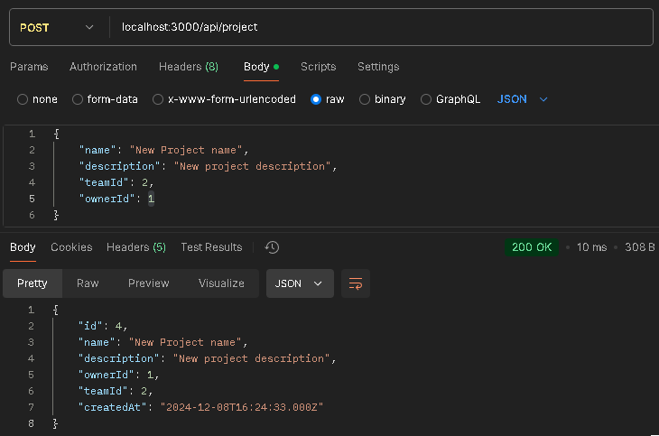
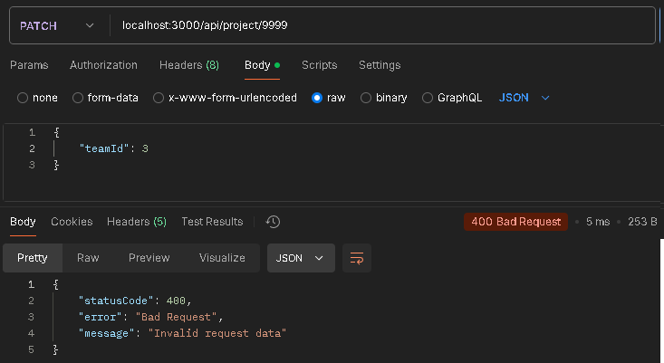
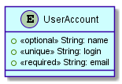
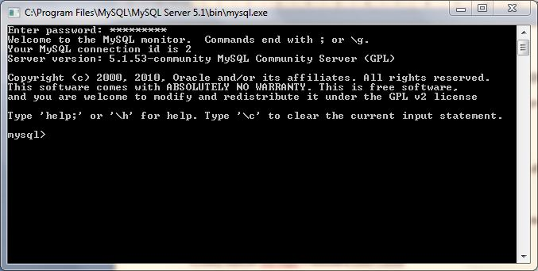

Курсова робота з предмету "Бази даних": Система управління проєктами
КПІ | Осінь-зима 2024 | Спеціальність 121 | Група ІМ-34 | Підгрупа #1
Виконали
студент 2-го курсу, групи ІМ-34 Євген БУТКЕВИЧ
Telegram: @de_evgenko
студент 2-го курсу, групи ІМ-34 Микола ІГЛАЙКІН
Telegram: @niglaykin
студентка 2-го курсу, групи ІМ-34 Карина КОРЧОВА
Telegram: @arosyri
студент 2-го курсу, групи ІМ-34 Максим КРУЛЕВСЬКИЙ
Telegram: @MaksimkaMalutka
студент 2-го курсу, групи ІМ-34 Максим НЕТЯГА
Telegram: @maxnetyaga
студентка 2-го курсу, групи ІМ-34 Вероніка ОСТАПОВА
Telegram: @VeronikaNuar
студент 2-го курсу, групи ІМ-34 Матвій ШПИРУК
Telegram: @pqpj5
Керівник
доцент кафедри ОТ ФІОТ, к.т.н., доцент Андрій БОЛДАК
НТУУ "КИЇВСЬКИЙ ПОЛІТЕХНІЧНИЙ ІНСТИТУТ імені ІГОРЯ СІКОРСЬКОГО
Факультет інформатики та обчислювальної техніки
Кафедра обчислювальної техніки
Київ
Вступ
У сучасних умовах інтенсивного розвитку інформаційних технологій та збільшення масштабів проектів різної складності, ефективна система управління проектами стає однією з ключових складових успішної діяльності організацій. Мета цієї бакалаврської роботи полягає в розробці системи управління проектами, яка дозволить підвищити продуктивність командної роботи, знизити ризики та оптимізувати процеси управління ресурсами.
Актуальність теми зумовлена зростанням кількості великих і складних проектів, особливо в сферах IT, будівництва, виробництва та наукових досліджень, де планування, контроль і координація є ключовими факторами успіху. Використання сучасних методологій управління проектами, таких як Agile, Scrum або Waterfall, дозволяє підвищити ефективність робочих процесів, але потребує добре налагоджених програмних інструментів, що забезпечують повний контроль над усіма аспектами проекту.
На даний момент існує ряд рішень для управління проектами, таких як Jira, Microsoft Project, Asana, але кожен з них має свої обмеження і не завжди підходить для специфічних потреб різних компаній. Розробка нової системи управління проектами дозволить адаптувати функціонал під конкретні завдання і особливості підприємства, що підвищить гнучкість і ефективність управління проектами.
Основні технічні характеристики запропонованої системи включають інтуїтивний інтерфейс, інтеграцію з іншими корпоративними системами, модулі для управління завданнями, ресурсами та ризиками. Очікуваний технічно-економічний ефект від впровадження такої системи полягає у скороченні витрат часу на планування і контроль, зниженні ризиків, підвищенні продуктивності праці команди, а також поліпшенні якості реалізованих проектів.
Розроблення загальних вимог до системи
Аналіз предметної області
Вступ
Цей документ містить комплексний опис підходів, інструментів та методологій, які використовуються в управлінні проєктами для досягнення поставлених цілей та створення нової цінності у вигляді продукту або послуги. У ньому наведені ключові поняття, такі як проєкт, система управління проєктами, методології Agile, Waterfall, Scrum та Kanban. Описано принципи управління проєктами, від планування до реалізації, із зазначенням конкретних методологій та їх характеристик.
Окремо розглянуто підходи до планування та управління ресурсами за допомогою таких інструментів, як діаграми Ґанта та Kanban-дошки, які допомагають візуалізувати процеси та контролювати завдання. Увага приділена також ключовим термінам, як-от життєвий цикл програмного забезпечення, мінімально життєздатний продукт (MVP), система контролю версій.
У розділі про порівняльну характеристику існуючих засобів вирішення завдання розглядаються сучасні програмні продукти та інформаційні системи з погляду функціональності, зручності використання, надійності, продуктивності та підтримки (FURPS).
Основні визначення
Проєкт - це сукупність конструкторських процесів, які містять технічне рішення і дають повне уявлення про будову розроблюваного виробу Дані процеси обмежені в часі, ресурсах та вимогах якості , направлені на досягнення унікальних цілей та завдань для створення нової цінності (продукту або послуги)
Система управління проєктами - це сукупність методів, інструментів і технологій, що використовуються для ефективного планування, контролю та управління проєктами Вона спрямована на підвищення продуктивності співробітників, оптимізацію процесу проєктного менеджменту та забезпечення прозорості й зручності управління проєктним портфелем компанії
Методологія управління проєктами - це набір певних правил, умов, принципів, дій, яких необхідно дотримуватись задля якісного закриття проєкту Свого роду це стандартизація підходу до роботи Наприклад методологія може визначати з яких кроків складаються робочі процеси, як контролюється виконання задач та відбувається взаємодія між членами команди, приймаються рішення, включати інші стандарти ведення проєкту
Модель - це узагальнене представлення проєкту, яке описує його основні елементи, етапи та взаємодії між ними Вона використовується для структуризації та планування проєкту, щоб забезпечити зрозумілий процес його виконання
Гнучка розробка програмного забезпечення або AGILE - це підхід до розробки програмного забезпечення, основний сенс якого полягає в наступному: проєкт може розвиватись та змінюватись, відповідно продукт, рішення чи результат проєкту можуть змінюватись разом з ним Фундаментом даного підходу є комунікація та співпраця між командами
Waterfall - це одна з найбільш традиційних і поширених методологій в проджект-менеджменті Її основа — це послідовність Тобто кожен етап проєкту «перетікає» в наступний, неухильно стікаючи вниз, як водоспад
Скрам або Scrum - найпопулярніший фреймворк з філософією AgileЙого основна задача — усунути всі перешкоди на шляху до більш ефективного виконання роботи Особливість Scrum полягає в командному підході та нестандартному розподілі обов’язків всередині колективу До процесів залучені не лише співробітники компанії, а й бізнес-замовники, які приймають участь в створенні продукту активніше, ніж за інших підходів, і роблять це переважно у форматі особистого спілкування, а не через документацію
Канбан або Kanban - фреймворк ще більш гнучкий, ніж Scrum Його сенс полягає в візуалізації робочих процесів за допомогою канбан-дошок Це дозволяє візуально контролювати виконання завдань та навантаженість колективу ,що призводить до зменшення кількості помилок
Канбан-дошка - це інструмент управління Agile-проектами, який допомагає наочно подати завдання, обмежити обсяг незавершеної роботи та досягти максимальної ефективності (або швидкості) За допомогою карток та стовпців на дошці Kanban команди з технічних питань та сервісні команди можуть зрозуміти, який обсяг роботи слід взяти на себе, та виконати цей обсяг, дотримуючись принципів безперервного вдосконалення
Спрінт або Sprint - це цикл виконання завдань або часові відрізки, які можуть складатися від одного тижня до місяця За цей період, команда має розробити готовий до тестування продукт
PRINCE2 — це офіційна методологія на основі каскадного підходу, яка забезпечує детальну документацію та контроль над ресурсами, продуктивністю, персоналом, витратами й ризиками Вона чітко визначає ролі й спрощує управління проєктами
Діаграма Ґанта - інструмент проектного менеджменту, який також відноситься до візуальних Даний інструмент допомагає учасникам робочого процесу відслідковувати зв'язки між задачами, критичні точки, дати початку і завершення роботи над задачею
Життєвий цикл програмного забезпечення - період часу, який починається з моменту прийняття рішення про необхідність створення програмного продукту і закінчується в момент його повного вилучення з експлуатації
Мінімально життєздатний продукт або Minimum viable product, MVP - це концепція, що передбачає створення продукту з мінімальною кількістю функцій, достатньою для валідації ключових припущень та отримання зворотного зв'язку від реальних користувачів
Система контролю версій - це система, що записує зміни у файл або набір файлів протягом деякого часу, так що ви зможете повернутися до певної версії пізнише
Підходи та способи вирішення завдання
Методологія Водоспаду (Waterfall)
Методологія водоспаду (Waterfall) — це лінійна послідовна модель розробки, у якій кожен етап проекту повністю завершується перед початком наступного.
Детальний опис Waterfall
Водоспад — це класична модель розробки, яка складається з декількох чітко визначених етапів. Цей підхід передбачає, що весь проект розбивається на послідовні фази, кожна з яких виконується в певному порядку:
-
Збір та аналіз вимог: Всі вимоги до проекту збираються, аналізуються та фіксуються. Це ключовий етап, на якому визначаються всі цілі та обмеження проекту.
-
Проектування системи: Після збору вимог розробляється план або схема, яка детально описує, як будуть виконані всі завдання. Це може включати стратегічні, технічні або організаційні аспекти проекту
-
Реалізація: Відбувається виконання завдань проекту відповідно до плану. Це може бути будь-який процес створення продукту, послуги чи вирішення задачі, залежно від типу проекту.
-
Тестування: Результати реалізації перевіряються на відповідність вимогам. Це може включати валідацію, оцінку або контроль якості для підтвердження того, що всі етапи виконані правильно.
-
Впровадження: Після успішного тестування результат передається у використання або надається замовнику. Це фінальний етап, коли проект завершується та надається кінцевий продукт.
-
Супровід: Якщо проект передбачає подальший моніторинг чи підтримку, на цьому етапі відбуваються дії з підтримки стабільної роботи або внесення незначних коригувань.
Переваги Waterfall
-
Чітка послідовність: Проект виконується за чітко визначеними етапами, що полегшує планування та управління процесом.
-
Детальна документація: Кожен етап супроводжується повною документацією, що створює прозорість та допомагає уникати непорозумінь.
-
Прогнозованість: Легко визначити, коли кожен етап завершиться, що дозволяє планувати ресурси та строки.
-
Контроль якості: Кожен етап може бути ретельно перевірений перед переходом до наступного, що знижує ризик помилок.
Недоліки Waterfall
-
Мала гнучкість: Зміни в проекті після завершення етапів можуть бути складними та затратними, оскільки методологія передбачає чітке дотримання плану.
-
Ризик виявлення проблем на пізніх етапах: Недоліки чи помилки можуть стати помітними лише на пізніх етапах, що може збільшити витрати на їх усунення.
-
Тривалість циклу: Кінцевий результат доступний тільки після завершення всіх етапів, що може затримати зворотний зв'язок від зацікавлених сторін.
-
Висока залежність від початкових вимог: Проект успішно виконується тільки тоді, коли початкові вимоги були визначені коректно. Зміни вимог можуть призвести до значних складнощів.
Кому підійде Waterfall
Методологія водоспаду підходить для проектів з чіткими вимогами та передбачуваними процесами, де зміни рідкісні або небажані. Це можуть бути проекти в галузях, де важлива послідовність і контроль, наприклад, у будівництві, виробництві, державних програмах або великих корпоративних проектах, які потребують суворого дотримання плану.
Методологія Agile
Agile — це ітеративна та гнучка методологія управління проектами, яка акцентує увагу на швидкому реагуванні на зміни, активній співпраці між командами та замовниками, а також постійному вдосконаленні продукту.
Детальний опис Agile
Методологія Agile передбачає виконання проекту в циклах, що називаються ітераціями, з такими основними етапами:
-
Планування: На цьому етапі формуються цілі проекту, визначаються основні вимоги та розробляється дорожня карта. Це включає в себе ідентифікацію ключових функціональностей, які потрібно реалізувати.
-
Розробка: У рамках ітерацій команда працює над реалізацією визначених функціональностей. Цей процес може включати написання коду, тестування, дизайн та інші задачі, пов'язані з виконанням проекту.
-
Тестування: Після завершення кожної ітерації проводиться тестування отриманого продукту. Це дозволяє виявити та виправити помилки на ранньому етапі, поки вони ще свіжі.
-
Зворотний зв'язок: Після кожної ітерації отримується зворотний зв'язок від зацікавлених сторін. Це дає можливість коригувати подальший розвиток проекту, враховуючи побажання та потреби клієнтів.
-
Адаптація: Команда оцінює результати та вносить корективи в план і стратегію. Цей етап включає в себе обговорення того, що було зроблено добре, а що можна покращити.
Переваги Agile
-
Гнучкість: Agile дозволяє швидко реагувати на зміни в вимогах або умовах ринку, що робить проекти більш адаптивними.
-
Постійний зворотний зв'язок: Регулярний обмін інформацією з замовниками допомагає зберігати проект на правильному шляху та забезпечує задоволення потреб клієнтів.
-
Ітеративний підхід: Розбиття проекту на менші частини дозволяє командам поступово вдосконалювати продукт, зменшуючи ризики.
-
Підвищення якості: Постійне тестування та перевірка продукту дозволяють виявляти проблеми на ранніх етапах, що підвищує якість фінального результату.
Недоліки Agile
-
Складність планування: Гнучкість Agile може ускладнити процес планування, оскільки вимоги можуть змінюватися в будь-який момент.
-
Необхідність активної участі замовника: Успішна реалізація методології вимагає постійної співпраці з замовниками, що не завжди можливо.
-
Ризик відсутності чіткої структури: Відсутність жорстких рамок може призвести до недостатньої фокусованості на завершенні проекту вчасно та у межах бюджету.
-
Витрати на управління: Agile вимагає постійного моніторингу та оцінки, що може збільшити адміністративні витрати.
Кому підійде Agile
Agile підходить для проектів, де важливі швидкі зміни та гнучкість, таких як програмне забезпечення, стартапи, інноваційні продукти або проекти з невизначеними вимогами. Ця методологія корисна для команд, які здатні працювати в динамічному середовищі і готові до активної співпраці з клієнтами.
Методологія Scrum
Scrum — це адаптивна методологія управління проектами, яка базується на принципах Agile. Вона акцентує увагу на ітеративному розвитку, активній співпраці команди та регулярних зворотних зв'язках.
Детальний опис методики Scrum
Методологія Scrum включає в себе такі основні компоненти:
-
Ролі: У Scrum є три основні ролі: Продуктова власник (Product Owner), Scrum-майстер (Scrum Master) та команда розробників. Кожна з ролей має свої обов'язки та відповідальність.
-
Спеціальні події: Scrum визначає ряд важливих подій, які відбуваються в процесі роботи:
-
Спринт: Основна ітерація, яка триває від одного до чотирьох тижнів. Усі роботи виконуються в межах одного спринту.
-
Планування спринту: Зустріч, на якій команда визначає, які завдання будуть виконані в поточному спринті. Це дозволяє зосередитися на конкретних цілях.
-
Щоденний Scrum: Коротка щоденна зустріч, де команда обговорює прогрес і проблеми. Це допомагає зберігати всі на одній сторінці.
-
Огляд спринту: Зустріч наприкінці спринту, де команда демонструє виконану роботу. Це надає можливість отримати зворотний зв'язок.
-
Ретроспектива спринту: Зустріч для оцінки результатів спринту і обговорення можливостей для вдосконалення. Це допомагає команді ставати кращою.
-
-
Артефакти: Scrum має три основні артефакти:
-
Беклог продукту: Список вимог до продукту, який постійно оновлюється. Цей список включає всі функціональності, які потрібно реалізувати.
-
Беклог спринту: Набір завдань, які команда планує виконати в межах конкретного спринту. Це фокусує команду на досягненні короткострокових цілей.
-
Інкремент: Кінцевий продукт, який команда надає наприкінці кожного спринту. Це фактично те, що було реалізовано під час спринту.
-
Переваги Scrum
-
Гнучкість: Scrum дозволяє швидко реагувати на зміни в вимогах або пріоритетах проекту.
-
Чітка структура: Ролі, події та артефакти забезпечують зрозумілість і організованість процесу.
-
Постійний зворотний зв'язок: Регулярні огляди та ретроспективи дозволяють отримувати зворотний зв'язок і вносити корективи в роботу.
-
Підвищення продуктивності: Ітеративний підхід сприяє кращому фокусу на досягненні цілей і зменшує ризик затримок.
Недоліки Scrum
-
Необхідність активної участі: Scrum вимагає від команди високої залученості та постійної співпраці з усіма учасниками проекту.
-
Складність управління: Для новачків може бути важко зрозуміти всі аспекти методології та ефективно їх реалізувати.
-
Витрати на управління: Часті зустрічі та активне управління можуть збільшити адміністративні витрати.
-
Можливість перевантаження: Без чіткої організації команда може відчувати перевантаження через велику кількість завдань і змін.
Кому підійде Scrum
Scrum підходить для проектів, де важлива гнучкість, швидка реакція на зміни та активна співпраця між членами команди. Ця методологія особливо ефективна для розробки програмного забезпечення, інноваційних проектів та стартапів, де часто виникають нові ідеї та вимоги.
Метод критичного шляху (Critical Path Method, CPM)
Метод критичного шляху (CPM) — це техніка управління проектами, яка використовується для планування та контролю проектів шляхом визначення критичного шляху, що складається з послідовності завдань, які необхідно виконати для завершення проекту в межах запланованого терміну.
Детальний опис CPM
Метод критичного шляху включає в себе кілька ключових етапів:
-
Визначення завдань: Спочатку потрібно визначити всі завдання, які потрібно виконати в рамках проекту. Цей етап є критично важливим для створення повного списку робіт.
-
Визначення залежностей: Після визначення завдань важливо виявити залежності між ними, тобто які завдання мають бути виконані до інших. Це дозволяє побудувати логічну структуру проекту.
-
Оцінка тривалості: Кожному завданню надається оцінка тривалості виконання, яка враховує всі ресурси та обмеження. Це дозволяє визначити, скільки часу потрібно для завершення кожного завдання.
-
Побудова мережі проекту: На основі завдань, залежностей та оцінених тривалостей будується мережа проекту, яка відображає всі етапи виконання. Ця мережа є основою для подальшого аналізу.
-
Визначення критичного шляхy: Критичний шлях визначається як найдовша послідовність завдань, що веде до завершення проекту. Цей шлях є важливим, оскільки затримка будь-якого завдання на критичному шляху призведе до затримки всього проекту.
Переваги CPM
-
Оптимізація часу: CPM дозволяє точно визначити, які завдання є критичними для дотримання термінів проекту, що допомагає уникнути затримок.
-
Покращене планування: Завдяки чіткій структурі, CPM сприяє кращому плануванню ресурсів і часу.
-
Візуалізація: Візуалізація проекту у вигляді мережі допомагає зрозуміти зв'язки між завданнями та їх вплив на загальний прогрес.
-
Контроль за змінами: Метод дозволяє ефективно контролювати зміни в проекті та швидко реагувати на них.
Недоліки CPM
-
Складність у великих проектах: Для великих проектів з численними завданнями та залежностями метод може стати складним у реалізації та управлінні.
-
Необхідність точних даних: CPM вимагає точних оцінок тривалості завдань; неточності можуть призвести до помилок у плануванні.
-
Ігнорування ресурсів: CPM не враховує обмеження ресурсів, що може призвести до перевантаження команди або недостатньої кількості ресурсів.
-
Можливість стагнації: Якщо проект затримується, може виникнути потреба у повторному аналізі та перерахунку критичного шляху.
Кому підійде CPM
Метод критичного шляху підходить для проектів, де важливо дотримуватись термінів виконання завдань, а також для проектів з чіткими залежностями між завданнями. Ця методологія особливо корисна для будівельних, інженерних та IT-проектів, де час є критичним фактором для успішного завершення проекту.
Методологія Бережливого Управління (Lean)
Lean — це методологія управління проектами, що спрямована на максимізацію цінності для клієнта при мінімізації витрат і втрат. Вона акцентує увагу на безперервному вдосконаленні процесів і скороченні непотрібних витрат у всіх аспектах діяльності.
Детальний опис Lean
Методологія Lean включає кілька ключових принципів:
-
Орієнтація на цінність: Визначення цінності з точки зору клієнта та фокусування на тому, щоб надавати лише ті продукти та послуги, які відповідають потребам клієнтів. Цей етап дозволяє зрозуміти, що є справжньою цінністю для споживача.
-
Виявлення втрат: Ідентифікація всіх видів втрат у процесах, які не додають цінності. Це можуть бути зайві етапи, затримки, надмірні запаси тощо. Цей етап є важливим для оптимізації процесів.
-
Безперервне вдосконалення: Lean заохочує постійне вдосконалення процесів, залучаючи всю команду до пошуку шляхів підвищення ефективності. Цей підхід дозволяє адаптуватися до змін у потребах клієнтів та умовах ринку.
-
Залучення команди: У Lean команда відіграє важливу роль у вдосконаленні процесів. Працівники заохочуються до виявлення проблем і пропонування ідей для їх вирішення. Цей аспект сприяє розвитку культури співпраці та інновацій.
-
Створення безперервного потоку: Lean спрямований на організацію роботи так, щоб завдання виконувалися в безперервному потоці, без затримок і простоїв. Цей підхід дозволяє підвищити продуктивність і зменшити час виконання завдань.
Переваги Lean
-
Зниження витрат: Lean дозволяє зменшити витрати за рахунок усунення втрат і оптимізації процесів.
-
Покращення якості: Зосередження на безперервному вдосконаленні сприяє підвищенню якості продукції та послуг.
-
Задоволеність клієнтів: Орієнтація на потреби клієнтів забезпечує більшу задоволеність та лояльність споживачів.
-
Гнучкість: Lean дозволяє швидко адаптуватися до змін у ринкових умовах та вимогах клієнтів.
Недоліки Lean
-
Витрати на впровадження: Впровадження Lean може вимагати значних витрат на навчання персоналу та реорганізацію процесів.
-
Стійкість до змін: Команда може бути стійкою до змін, особливо якщо вже існують усталені звички та процедури.
-
Необхідність постійного контролю: Lean вимагає постійного моніторингу та аналізу процесів, що може бути ресурсомістким.
-
Обмеження в термінах: У деяких випадках методологія може не бути застосована до проектів із жорсткими термінами, де критично важливе дотримання графіків.
Кому підійде Lean
Lean підходить для організацій, які прагнуть оптимізувати свої процеси та зменшити витрати. Ця методологія особливо корисна для виробничих компаній, стартапів та підприємств, які прагнуть до інновацій і вдосконалення своїх послуг.
Методологія Six Sigma
Six Sigma — це методологія управління якістю, яка спрямована на зменшення варіацій у процесах і підвищення їхньої ефективності через використання статистичних інструментів та методів. Основна мета Six Sigma — досягти практично нульового рівня дефектів у виробництві та обслуговуванні.
Детальний опис Six Sigma
Методологія Six Sigma базується на кількох основних принципах:
-
Фокус на якості: Six Sigma акцентує увагу на якості продукції та послуг, спрямовуючи зусилля на зменшення дефектів та підвищення задоволеності клієнтів. Цей етап передбачає детальне визначення вимог до якості.
-
Використання статистичних методів: Методологія включає в себе використання статистичних інструментів для аналізу даних, виявлення проблем і оптимізації процесів. Це дозволяє приймати обґрунтовані рішення на основі фактичних даних.
-
Цикл DMAIC: Six Sigma використовує цикл DMAIC для покращення існуючих процесів:
- Define (Визначити): Визначення проблеми та цілей проекту.
- Measure (Виміряти): Збір даних для оцінки поточного стану процесу.
- Analyze (Аналізувати): Виявлення причин проблем і варіацій у процесах.
- Improve (Поліпшити): Розробка та впровадження рішень для поліпшення процесу.
- Control (Контролювати): Встановлення систем контролю для підтримки поліпшень.
-
Ролі в проекті: У Six Sigma існують різні ролі, які мають різні рівні кваліфікації, такі як Чорні пояси (Black Belts), Зелена пояси (Green Belts) та Білі пояси (White Belts). Ці ролі відповідають за управління проектами, навчання та підтримку команди.
Переваги Six Sigma
-
Зменшення дефектів: Six Sigma дозволяє значно зменшити кількість дефектів у продукції та послугах, що призводить до підвищення якості.
-
Збільшення продуктивності: Методологія допомагає оптимізувати процеси, що призводить до підвищення загальної продуктивності.
-
Поліпшення задоволеності клієнтів: Підвищення якості продукції та послуг безпосередньо впливає на задоволеність клієнтів.
-
Системний підхід: Six Sigma надає структурований підхід до вирішення проблем і прийняття рішень, що допомагає зменшити ризики.
Недоліки Six Sigma
-
Складність впровадження: Впровадження Six Sigma може бути складним і вимагати значних зусиль та ресурсів.
-
Необхідність спеціальних навичок: Для реалізації Six Sigma потрібні фахівці з відповідними знаннями та навичками у статистиці та управлінні проектами.
-
Часозатратність: Процес впровадження та покращення може займати багато часу, що може не відповідати потребам швидко змінюваного бізнес-середовища.
-
Витрати на навчання: Навчання персоналу Six Sigma може бути витратним і вимагати значних фінансових ресурсів.
Кому підійде Six Sigma
Six Sigma підходить для організацій, які прагнуть досягти високої якості та зменшити дефекти в своїх процесах. Ця методологія особливо корисна для виробничих компаній, сфери послуг та інших галузей, де якість є критично важливим фактором успіху.
Методологія PRINCE2
PRINCE2 (Projects IN Controlled Environments) — це структурована методологія управління проектами, яка акцентує увагу на організації, контролі та якості управлінських процесів. Вона надає всебічний підхід до управління проектами, який дозволяє досягати визначених цілей.
Детальний опис методики PRINCE2
Методологія PRINCE2 базується на семи принципах, семи темах і семи процесах:
-
Принципи PRINCE2: Основні принципи, на яких базується PRINCE2:
- Продовження бізнес-справедливості: Проект повинен мати визначену економічну доцільність.
- Уроки з минулого: Проекти повинні враховувати досвід минулих проектів.
- Ролі та відповідальність: Чітке визначення ролей і відповідальності в проекті.
- Поетапне управління: Проект має бути розбитий на етапи для покращення контролю.
- Сфокусованість на продуктах: Результати проекту повинні бути чітко визначені.
- Гнучкість: Методологія повинна бути адаптована до конкретних умов проекту.
- Управління за допомогою винятків: Влада надається на нижчому рівні, а питання, що виходять за межі встановлених меж, повинні управлятися на більш високих рівнях.
-
Теми PRINCE2: Теми методології PRINCE2, які потрібно враховувати протягом всього проекту:
- Бізнес-кейс: Визначає обґрунтованість проекту.
- Організація: Визначає структуру управління проектом.
- Якість: Визначає, як забезпечити якість у проекті.
- Плани: Визначає, як планувати діяльність проекту.
- Ризики: Управління ризиками в проекті.
- Зміни: Управління змінами в рамках проекту.
- Прогрес: Відстеження та контроль за прогресом проекту.
-
Процеси PRINCE2: Призначені для забезпечення управління проектом з початку до завершення:
- Старт проекту: Формування основи для проекту.
- Ініціювання проекту: Визначення цілей і обсягу проекту.
- Контроль етапів: Управління та контроль етапів проекту.
- Керування постачанням продуктів: Забезпечення виготовлення продукції.
- Управління змінами: Визначення та управління змінами в проекті.
- Закриття проекту: Завершення проекту та оцінка результатів.
Переваги PRINCE2
-
Структурований підхід: PRINCE2 надає чітку структуру управління проектом, що полегшує контроль і планування.
-
Гнучкість: Методологія дозволяє адаптуватися до різних умов проекту, що робить її універсальною.
-
Ясність ролей і відповідальності: Чітке визначення ролей у проекті забезпечує ефективну комунікацію та управління.
-
Фокус на продуктах: Методологія акцентує увагу на результатах проекту, що забезпечує якість і задоволеність замовника.
Недоліки PRINCE2
-
Складність впровадження: PRINCE2 може бути складною для впровадження у малих проектах через свою структурованість.
-
Необхідність навчання: Для ефективного використання методології необхідне навчання команди, що може займати час і ресурси.
-
Витрати на сертифікацію: Вартість сертифікації PRINCE2 може бути значною для організацій.
-
Зосередженість на документації: Методологія може вимагати значних зусиль на створення документів, що може відволікати від практичних аспектів управління проектом.
Кому підійде PRINCE2
PRINCE2 підходить для організацій будь-якого розміру, які прагнуть до структурованого управління проектами. Ця методологія є особливо корисною для великих проектів у державному секторі та в промисловості, де контроль і документація є критично важливими.
Методологія Kanban
Kanban — це методологія управління проектами, яка акцентує увагу на візуалізації роботи, управлінні потоком завдань і безперервному вдосконаленні процесів. Вона використовується для оптимізації процесів в командах і допомагає знизити час виконання завдань.
Детальний опис методики Kanban
Методологія Kanban базується на кількох основних принципах:
-
Візуалізація роботи: Kanban використовує візуальні інструменти, такі як дошки (Kanban board), для представлення завдань і їх статусу. Це дозволяє всім учасникам команди швидко зрозуміти, на якому етапі перебуває робота.
-
Управління потоком завдань: Kanban фокусується на безперервному потоці завдань, що допомагає уникати заторів і затримок. Цей підхід дозволяє командам ефективно управляти навантаженням.
-
Обмеження обсягу роботи в процесі (WIP): Kanban встановлює обмеження на кількість завдань, які можуть бути в процесі одночасно, щоб запобігти перевантаженню команди. Це сприяє підвищенню продуктивності та зниженню стресу.
-
Безперервне вдосконалення: Kanban підтримує принцип постійного вдосконалення процесів і роботи команди. Це може включати регулярні огляди та адаптацію методів роботи.
Переваги Kanban
-
Гнучкість: Kanban дозволяє адаптуватися до змін у вимогах і пріоритетах, що робить його зручним для динамічних середовищ.
-
Прозорість процесів: Візуалізація роботи забезпечує ясність у прогресі завдань і дозволяє всім членам команди бути в курсі стану проекту.
-
Покращення продуктивності: Обмеження WIP допомагає уникнути перевантаження, що призводить до зростання продуктивності.
-
Легкість впровадження: Kanban легко впровадити в існуючі процеси без необхідності великих змін.
Недоліки Kanban
-
Необхідність самодисципліни: Успішне використання Kanban вимагає високого рівня самодисципліни та самоконтролю від команди.
-
Менша структурованість: Kanban може бути менш структурованим, ніж інші методології, що може призвести до плутанини в командах без чітких правил.
-
Можливість затягування термінів: Якщо не встановити чітких пріоритетів, завдання можуть затягуватися, що негативно вплине на строки виконання.
-
Недостатня увага до планування: Kanban не надає великої уваги плануванню, що може бути недоліком для проектів з жорсткими термінами.
Кому підійде Kanban
Kanban підходить для команд, які працюють в динамічних умовах і прагнуть до гнучкості у своїй роботі. Ця методологія є особливо корисною для IT-компаній, стартапів і команд, які займаються розробкою програмного забезпечення, а також для будь-яких проектів, що вимагають швидкої реакції на зміни.
Порівняльна характеристика існуючих засобів вирішення завдання
| Платформа | Functionality (Функціональні вимоги) | Usability (Вимоги до зручності роботи) | Reliability (Вимоги до надійності) | Performance (Вимоги до продуктивності) | Supportability (Вимоги до підтримки) |
|---|---|---|---|---|---|
| GitHub Projects | - Інтеграція з Git | - Інтуїтивний інтерфейс для досвідчених користувачів | - Масштабованість | - Швидка робота інтерфейсу | - API для інтеграцій |
| - Автоматизація через GitHub Actions | - Гнучкість представлення завдань | - Регулярні оновлення | - Швидкі автоматичні перевірки коду | - Розширення через плагіни | |
| - Інструменти співпраці (pull request'и, обговорення) | - Документація | - Резервне копіювання | - Стабільність при високих навантаженнях | - Підтримка документації та спільноти | |
| Trello | - Дошки Kanban | - Простота використання | - Стабільна робота системи | - Швидкий інтерфейс | - Інтеграції через Power-Ups |
| - Автоматизація через Butler | - Мобільні додатки | - Хмарна інфраструктура | - Швидкий пошук | - Широка підтримка платформи | |
| - Теги та метки для категоризації завдань | - Drag-and-drop функціональність | - Історія змін | - Оперативна синхронізація на різних пристроях | - Документація та підтримка | |
| Basecamp | - Управління проєктами | - Єдиний робочий простір | - Надійна хмарна платформа | - Швидкий інтерфейс | - Інтеграції з іншими сервісами |
| - Інтеграція чату та обговорень | - Мінімалістичний інтерфейс | - Автоматичні бекапи | - Масштабованість для великих команд | - API для автоматизації | |
| - Календар і планування | - Нотифікації для важливих подій | - Стабільність роботи | - Низьке використання ресурсів | - Добре організована документація і підтримка | |
| Nifty | - Управління проектами та завданнями | - Інтуїтивний інтерфейс | - Надійна робота з мінімальними збоями | - Швидке завантаження інтерфейсу | - Активна підтримка та часті оновлення |
| - Канбан, календар, час відстеження | - Простий в навігації | - Резервне копіювання даних | - Можливість керування великими командами | - Документація, чат підтримки | |
| - Інтеграція з Google Drive, Slack | - Зручна мобільна версія | - Регулярні оновлення | - Ефективне управління ресурсами | - Форум користувачів, FAQ | |
| Backlog | - Управління завданнями та версіями | - Більш технічний інтерфейс | - Висока стабільність роботи | - Продуктивність на високому рівні | - Підтримка через документацію, форуми |
| - Інтеграція з Git та SVN | - Орієнтовано на розробників | - Захист даних | - Використовується у великих командах | - Регулярні оновлення, API | |
| - Відстеження багів | - Доступні потужні звіти | - Автоматичне збереження даних | - Оптимізоване для спільної роботи | - Інтеграції з іншими системами | |
| Asana | - Управління завданнями та проектами | - Простіший і сучасний інтерфейс | - Висока доступність платформи | - Висока продуктивність | - Широка база знань та підтримка |
| - Множинні режими перегляду (список, канбан, календар) | - Легкість використання | - Мінімальні простої | - Добре працює на різних пристроях | - Часті оновлення, підтримка клієнтів | |
| - Інтеграції з понад 100 додатками | - Багато навчальних матеріалів | - Надійність при великих навантаженнях | - Ефективне керування великими командами | - Велика кількість інтеграцій |
Висновки
На основі проведеного аналізу підходів та інструментів управління проєктами можна зробити висновок про доцільність розробки нової або модифікації існуючої інформаційної системи. У сучасних умовах ефективне управління проєктами вимагає використання гнучких методологій, таких як Agile, Scrum або Kanban, які забезпечують адаптивність та швидке реагування на зміни в ході проєкту.
Також важливою є інтеграція інформаційної системи з сервісами третіх сторін, що може підвищити її функціональні можливості та забезпечити більшу автоматизацію процесів. Впровадження нової або модифікованої системи повинно враховувати необхідність підтримки сучасних стандартів продуктивності, надійності та зручності використання, що відповідає вимогам FURPS.
Посилання
-
https://uk.wikipedia.org/wiki/%D0%9F%D1%80%D0%BE%D1%94%D0%BA%D1%82
-
https://blog.agrokebety.com/shcho-take-upravlinnya-proektamy
-
https://training.qatestlab.com/blog/technical-articles/scrum-terminology/
-
https://training.qatestlab.com/blog/technical-articles/popular-software-development-life-cycles/
-
https://ux.pub/zhmikhov/minimalno-zhittiezdatnii-produkt-minimum-viable-product-mvp-3if3
Запити зацікавлених осіб
Вступ
Цей документ містить всю необхідну інформацію , що потрібена для ознайомлення зацікавлених осіб з даним проєктом.
Даний документ надає можливість ознайомлення з такою інформацією : основні визачення ,що використвуються у документі; характеристику ділових процесів, короткий огляд продукту,а також визначені та стрктуровані вимоги щодо функціональністі, практичністі, надійністі, продуктивністі.
Мета
Сформувати ідею про необхідні аспекти та можливості даного продукту , вимог до його о функціональністі, практичністі, надійністі, продуктивністі , шляхом аналізу цільової аудиторії зацікавлених осіб.
Контекст
Цей документ містить вимоги до нашого проєкту системи управління проєктами, надаючи зацікавленим особам можливість детально ознайомитися з функціональністю та можливостями продукту.
У ньому описується загальний процес роботи проєктами, а також наведено приклади, які підкреслюють переваги нашого продукту.
Основні визначення та скорочення
Зацікавлені особи - це особа чи організація, яка може впливати, зазнавати впливу або відчувати вплив рішення чи діяльності.
Use case - це перелік дій за яким користувач взаємодіє з додатком або програмою для виконання будь-якої дії .
FURPS - це акронім, що представляє модель для класифікації атрибутів якості програмного забезпечення (функціональні та нефункціональні вимоги):
Functionality — функціональні вимоги — можливості (розмір і загальність набору функцій), повторне використання (сумісність, портативність), безпека (безпека та можливість використання). Є основними, за цими вимогами будуються діаграми варіантів використання (Use case diagram).
Usability — юзабіліті — вимоги до зручності використання (UX): людський фактор, естетика, послідовність, документація.
Reliability — надійність — вимоги до надійності: частота можливих збоїв, стійкість до відмов, відновлюваність/живучість, передбачуваність (стабільність) стійкості.
Performance — продуктивність — вимоги до продуктивності: час відгуку, використання ресурсів (потужність, оперативна пам'ять, кеш-пам'ять тощо), ефективність, потужність, пропускна здатність, ємність, масштабованість.
Supportability — зручність супроводу — вимоги до підтримки (придатність до обслуговування, ремонтопридатність, стабільність, швидкість ремонту): можливість тестування, гнучкість (можливість модифікації, конфігурації, адаптивності, розширення, модульність), можливість встановлення, локалізація
Посилання
Короткий зміст
Характеристика ділових процесів
| ID | UserSignIn |
|---|---|
| Назва | Зареєструвати користувача (Sign In) |
| Учасники | Користувач (тімлід, або розробник), система |
| Передумови | Користувач не має облікового запису в системі |
| Результат | Створений обліковий запис користувача |
| Виключні ситуації | Користувач не заповнив усі обов'язкові поля форми для реєстрації NullReferenceException |
Обліковий запис вже існує у системі UserAlreadyExistsException | |
| Основний сценарій | 1. Користувач натискає кнопку "Створити обліковий запис" |
| 2. Користувач вводить реєстраційні дані | |
| 3. Користувач натискає кнопку "Зареєструватися" | |
| 4. Система перевіряє наявність облікового запису користувача | |
| 5. Система створює новий обліковий запис | |
| 6. Користувач переходить у щойностворений обліковий запис |
| ID | CreateAccount |
|---|---|
| Назва | Створення облікового запису |
| Учасники | Користувач, система |
| Передумови | Користувач не зареєстрований |
| Результат | Обліковий запис створено |
| Виключні ситуації | Email вже використовується |
| Некоректний email | |
| Слабкий пароль | |
| Обов'язкове поле не заповнено | |
| Основний сценарій | 1. Користувач натискає "Зареєструватися". |
| 2. Користувач заповнює всі поля реєстраційної форми (ім'я, email, пароль тощо). | |
| 3. Система перевіряє дані користувача. | |
| 4. Дані коректні, система створює обліковий запис. | |
| 5. Система перенаправляє користувача на сторінку входу. |
| ID | Login |
|---|---|
| Назва | Вхід в систему |
| Учасники | Користувач, система |
| Передумови | Обліковий запис існує |
| Результат | Користувач увійшов в систему |
| Виключні ситуації | Невірний пароль |
| Обліковий запис не знайдено | |
| Обліковий запис заблоковано | |
| Основний сценарій | 1. Користувач вводить логін та пароль на сторінці входу. |
| 2. Система перевіряє облікові дані. | |
| 3. Дані коректні і система авторизує користувача. |
| ID | EditAccount |
|---|---|
| Назва | Редагування облікового запису |
| Учасники | Користувач, система |
| Передумови | Користувач авторизований |
| Результат | Обліковий запис змінено |
| Виключні ситуації | Обліковий запис не знайдено |
| Некоректні дані | |
| Недостатньо прав для зміни полів | |
| Основний сценарій | 1. Користувач заходить у налаштування облікового запису. |
| 2. Користувач змінює особисті дані (ім'я, email, пароль тощо). | |
| 3. Система перевіряє дані на коректність. | |
| 4. Перевірка успішна, система зберігає зміни в обліковому записі. |
| ID | CreateProject |
|---|---|
| Назва | Створити проєкт |
| Учасники | Користувач, система |
| Передумови | Користувач авторизований |
| Результат | У системі створено новий проєкт, який відображається на панелі управління проєктами |
| Виключні ситуації | Не введено назви проєкту |
| Назву проєкту введено у неправильному форматі | |
| Основний сценарій | 1.Натискається кнопка "створити проєкт". |
| 2.Система відображає форму для введення основної інформації про проєкт. | |
| 3.Після заповнення форми користувач натискає кнопку "Зберегти". | |
| 4.Система перевіряє коректність введених даних. | |
| 5.Дані коректні, система створює проєкт і перенаправляє користувача на сторінку проєкту. |
| ID | DeleteProject |
|---|---|
| Назва | Видалити проєкт |
| Учасники | Адміністратор, керівник проєкту, система |
| Передумови | Користувач авторизований, має права на редагування проєкту і сам проєкт існує |
| Результат | Проєкт видалено з бази даних системи, і доступ до його інформації більше не можливий для користувачів. |
| Виключні ситуації | Недостатньо прав |
| Проєкт наразі активний і система не дозволяє його видалити | |
| Проєкт не знайдений | |
| Основний сценарій | 1.У списку проєктів користувач вибирає проєкт, який потрібно видалити. |
| 2.В меню дій для обраного проекту користувач обирає опцію "Видалити проєкт". | |
| 3.Система відображає запит на підтвердження операції видалення. | |
| 4.Керівник проекту/Адміністратор підтверджує видалення, натискаючи кнопку "Підтвердити". | |
| 5.Система перевіряє права користувача та статус проєкту. | |
| 6.Перевірка успішна, система видаляє проєкт і відображає повідомлення про успішне виконання операції | |
| 7.Адміністратор може відновити проєкт, якщо він зберігається в архіві. |
| ID | EditProject |
|---|---|
| Назва | Редагувати проєкт |
| Учасники | Адміністратор, керівник проєкту, система |
| Передумови | Користувач авторизований, має права на редагування проєкту і сам проєкт існує |
| Результат | Усі зміни збережені в системі та відображаються в проєкті. |
| Виключні ситуації | Недостатньо прав |
| Некоректні дані(наприклад пропущені обов'язкові поля) | |
| Проєкт не знайдений | |
| Основний сценарій | 1.У списку проєктів вибирається, який потрібно редагувати. |
| 2.Система відкриває форму редагування проєкту, де доступні всі поля для зміни(назва, терміни, опис і т.д.). | |
| 3.Керівник проекту вносить необхідні зміни. | |
| 4.Після редагування керівник натискає кнопку "Зберегти". | |
| 5.Система перевіряє коректність введених даних. | |
| 6.Всі дані коректні, система зберігає зміни і оновлює інформацію про проект. | |
| 7.Адміністратор може відновити проєкт, якщо він зберігається в архіві. |
| ID | CreateTask |
|---|---|
| Назва | Додати нову задачу |
| Учасники | Користувач(робітник або лідер команди), система |
| Передумови | - Користувач залогінений - Користувач є учасником проекту |
| Результат | Задача створена у проекті |
| Виключні ситуації | Ввведено некоректну інформацію про задачу Користувач натиснув кнопку "Скасувати" |
| Основний сценарій | 1. Користувач обирає проект і натискає кнопку "Нова задача" 2. Система відкриває форму для заповнення даних про задачу 3. Користувач заповнює поля: назва, дедлайн, виконавець, статус, мітки, прикріплює файли 4. Користувач натискає кнопку "Створити" 5. Система перевіряє правильність введених даних 6. Система додає нову задачу в проект |
| ID | EditTask |
|---|---|
| Назва | Оновити задачу |
| Учасники | Користувач(робітник або лідер команди), система |
| Передумови | - Користувач увійшов у систему - Користувач має доступ до проекту |
| Результат | Задача оновлена |
| Виключні ситуації | Введені некоректні дані Користувач натиснув "Скасувати" |
| Основний сценарій | 1. Користувач вибирає проект та задачу, натискає "Редагувати задачу" 2. Система відкриває форму з наявною інформацією про задачу 3. Користувач редагує дані: змінює назву, статус, виконавця, додає файли або мітки 4. Користувач натискає "Зберегти" 5. Система перевіряє нові дані 6. Система зберігає оновлені дані про задачу |
| ID | DeleteTask |
|---|---|
| Назва | Видалення задачі |
| Учасники | Користувач(робітник або лідер команди), система |
| Передумови | - Користувач увійшов у систему - Користувач має відповідні права у проекті |
| Результат | Задача видалена |
| Виключні ситуації | Користувач не має прав на видалення Користувач натиснув кнопку "Скасувати" |
| Основний сценарій | 1. Користувач обирає проект 2. Користувач вибирає задачу і натискає "Видалити задачу" 3. Система показує діалогове вікно для підтвердження видалення 4. Користувач підтверджує видалення, натискаючи "Так" 5. Система перевіряє права користувача 6. Система видаляє задачу з проекту |
| ID | SetNotification |
|---|---|
| Назва | Налаштування сповіщень |
| Учасники | Користувач(робітник або лідер команди), система |
| Передумови | - Користувач залогінений |
| Результат | Сповіщення налаштовані |
| Виключні ситуації | Користувач не вказав email для отримання сповіщень Користувачеві заблоковані сповіщення -Відсутні обов'язкові налаштування сповіщень -Користувач натиснув "Скасувати" |
| Основний сценарій | 1. Користувач заходить у налаштування свого акаунта і натискає "Керувати сповіщеннями" 2. Користувач натискає "Налаштувати сповіщення" 3. Система відкриває форму для налаштування сповіщень 4. Користувач обирає частоту і канал отримання сповіщень: email або мобільний додаток 5. Користувач підтверджує налаштування 6. Система перевіряє правильність налаштувань 7. Система активує налаштування сповіщень для користувача |
| ID | FilterTask |
|---|---|
| Назва | Відфільтрувати завдання |
| Учасники | Користувач (тімлід, або робітник), система |
| Передумови | - Користувач авторизований |
| Результат | Відфільтровані завдання |
| Виключні ситуації | У проєкті нема жодних завдань NoTasksException |
| Основний сценарій | 1. Користувач натискає кнопку "Використати фільтр" |
| 2. Користувач обирає параметри для фільтрування | |
| 3. Система відображає відфільтровані завдання |
| ID | CommentTask |
|---|---|
| Назва | Коментувати завдання |
| Учасники | Користувач (тімлід, або робітник), система |
| Передумови | - Користувач авторизований |
| - Користувач обрав проєкт | |
| - Користувач обрав завдання | |
| Результат | Коментар до завдання |
| Виключні ситуації | Користувач скасував операцію CancelCommentException |
| Основний сценарій | 1. Користувач натискає кнопку "Додати коментар" |
2. Користувач пише коментар (можливе CancelCommentException) | |
| 3. Користувач натискає кнопку "Надіслати" | |
| 4. Система зберігає коментар та повідомляє інших учасників цього завдання про новий коментар |
| ID | BanUser |
|---|---|
| Назва | Блокувати користувача |
| Учасники | Користувач (адміністратор системи, тімлід або робітник), система |
| Передумови | - Користувач порушив угоди використання програмного забезпечення |
| Результат | Блокування користувача |
| Виключні ситуації | Користувача вже заблоковано UserIsBannedException |
| Основний сценарій | 1. Адміністратор отримав велику кількість скарг |
| 2. Адміністратор робить висновок щодо блокування користувача | |
| 3. Адміністратор системи натискає на "Дії з користувачем" | |
| 4. Адміністратор заповнює форму для блокування | |
| 5. Адміністратор натискає на "Заблокувати користувача" | |
| 6. Система блокує користувача |
| ID | UnbanUser |
|---|---|
| Назва | Розблокувати користувача |
| Учасники | Користувач (адміністратор системи, тімлід або робітник), система |
| Передумови | - Користувач заблокований |
| Результат | Розблокування профілю користувача |
| Виключні ситуації | Користувача вже розблоковано UserIsUnbannedException |
| Основний сценарій | 1. Адміністратор знаходить заблокованого користувача |
| 2. Адміністратор системи натискає на користувача | |
| 3. Адміністратор натискає на "Розблокувати користувача" | |
| 4. Система розблоковує доступ користувачу та повідомляє йому інформацію про розблокування |
Короткий огляд продукту
Система управління проєктами — це програмне рішення, яке допомагає організаціям планувати, відстежувати та керувати проєктами від початку до завершення. Система забезпечує зручні інструменти для створення та призначення завдань, управління ресурсами, встановлення дедлайнів, а також моніторингу прогресу проєкту. Вона також сприяє командній співпраці, надаючи можливості для спільної роботи, комунікації. Система легко адаптується до потреб користувачів і допомагає організаціям ефективніше досягати поставлених цілей.
У Системі управління проєктами передбачені дві основні ролі користувачів: тімлід та розробник.
Функціональність
Тімлід:
- Створення нових проєктів та їхня ініціалізація.
- Перегляд загального статусу проєкту та контроль за прогресом команди.
- Доступ до детальної аналітики проєкту
- Створення, редагування та видалення завдань.
- Призначення завдань розробникам, встановлення пріоритетів та дедлайнів.
- Моніторинг виконання завдань, внесення коригувань у планування.
- Можливість додавати коментарі до завдань, надавати зворотний зв'язок, обговорювати технічні аспекти.
Розробник:
- Можливість переглядати загальну інформацію про проєкт, структуру задач та прогрес команди.
- Перегляд списку призначених завдань, зі статусами, пріоритетами та дедлайнами.
- Можливість змінювати статус завдання (в процесі, завершено, потребує перевірки тощо).
- Доступ до детальних описів завдань, доданих файлів, посилань на технічні ресурси.
- Можливість додавати коментарі про поточний стан виконання завдання.
- Оновлення статусу завдання для інформування тімліда про прогрес.
Практичність
- Інтуїтивний інтерфейс: зручний і зрозумілий користувацький інтерфейс, що легко освоїти навіть новим користувачам.
- Налаштовуваність: можливість персоналізації робочого простору відповідно до потреб користувача.
- Доступність на різних платформах: підтримка різних пристроїв і платформ (мобільний додаток, веб-версія).
- Мова інтерфейсу: підтримка кількох мов, можливість локалізації.
Надійність
- Стабільна робота системи: мінімізація збоїв, помилок та затримок у роботі.
- Збереження даних: регулярне автоматичне збереження даних і резервне копіювання для забезпечення їхньої цілісності.
- Безпека даних: шифрування даних, захист від несанкціонованого доступу, дотримання політик конфіденційності.
- Моніторинг і діагностика: постійний моніторинг роботи системи, ведення логів та система сповіщень про потенційні проблеми.
- Надійне керування правами доступу: гнучка система призначення прав доступу для контролю доступу до чутливих даних.
Продуктивність
- Швидкість виконання завдань: оптимізація процесів для швидкого реагування на зміни та виконання задач.
- Оптимізація коду: регулярний рефакторинг серверного коду для підвищення його продуктивності та зменшення витрат на ресурси.
- Розподілене зберігання даних: використання рішень для розподіленого зберігання, що забезпечує високу доступність і швидкість обробки даних.
- Моніторинг продуктивності сервера: реалізація систем моніторингу, які дозволяють відстежувати завантаженість серверів, затримки в обробці запитів і швидкість реагування системи.
- Оптимізація запитів до бази даних: використання індексування та кешування для зменшення часу виконання запитів і підвищення швидкості доступу до даних.
Експлуатаційна придатність
- Чистота коду: використання зрозумілого та структурованого коду, що полегшує читання, розуміння та внесення змін.
- Модульність: організація коду в незалежні модулі, що дозволяє легко додавати нові функціональні можливості без впливу на інші частини системи.
- Документація коду: наявність детальної документації для кожного модуля та функції, що полегшує підтримку та швидке введення нових розробників у проєкт.
- Автоматизоване тестування: впровадження юніт-тестів і інтеграційних тестів для забезпечення стабільності коду при внесенні змін та оновлень.
- Гнучкість у технологічному стеку: можливість легко змінювати або оновлювати технології у разі появи кращих рішень або потреби в нових функціях.
- Здатність легкого масштабування: архітектура системи, що дозволяє швидко адаптуватися до зростання навантаження або збільшення кількості користувачів без зниження продуктивності.
Розроблення функціональних вимог до системи
Загальна схема
@startuml
skinparam noteFontColor white
actor "Робітник" as Collaborator
usecase "<b>SignUp</b>\nЗареєструватися" as SignUp
usecase "<b>Login</b>\nВвхід у систему" as Login
usecase "<b>ManageTasks</b>\nУправління завданнями" as ManageTasks
usecase "<b>EditUser</b>\nРедагування даних користувача" as EditUser
Collaborator -r-> SignUp
Collaborator -u-> Login
Collaborator -l-> ManageTasks
Collaborator -u-> EditUser
note bottom of Collaborator #4e4e4e
Робітник може повною мірою керувати тільки<b>власними завданнями</b>
та на призначених йому завданнях він має можливість тільки
<b>змінювати статус</b> (to-do/in progress/done/in rewiew).
<b>Фільтрувати</b> та <b>коментувати</b> робітник може повною мірою <b>всі</b>
<b>завдання проекту</b>.
end note
actor "Тімлід" as Teamlead
usecase "<b>ProjectManage</b>\nКерувати проектом" as ProjectManage
Teamlead -> ProjectManage
Teamlead -u-|> Collaborator
actor "Адміністратор системи" as Admin
usecase "<b>DataManage</b>\nКерувати даними системи" as DataManage
Admin --> DataManage
Admin -u-|> Teamlead
@enduml
Робітник
@startuml
skinparam noteFontColor white
actor "Робітник" as Collaborator
usecase "<b>SignUp</b>\nРеєстрація" as SignUp
usecase "<b>UserSignUp</b>\nРеєстрація користувача" as UserSignUp
usecase "<b>LogIn</b>\nВхід" as Login
usecase "<b>UserLogIn</b>\nВхід користувача" as UserLogIn
usecase "<b>EditUser</b>\nРедагувати дані користувача" as EditUser
usecase "<b>ManageTasks</b>\nКерувати завданнями" as ManageTasks
usecase "<b>CreateTask</b>\nСтворити завдання" as CreateTask
usecase "<b>EditTask</b>\nРедагувати завдання" as EditTask
usecase "<b>DeleteTask</b>\nВидалити завдання" as DeleteTask
usecase "<b>FilterTask</b>\nВідфільтрувати завдання" as FilterTask
usecase "<b>CommentTask</b>\nКоментувати завдання" as CommentTask
Collaborator -l-> SignUp
SignUp <.d. UserSignUp:extends
Collaborator -r-> Login
Login <.d. UserLogIn:extends
Collaborator --d-> EditUser
Collaborator -u-> ManageTasks
ManageTasks <.u. CommentTask:extends
ManageTasks <.u. FilterTask:extends
ManageTasks <.u. DeleteTask:extends
ManageTasks <.u. EditTask:extends
ManageTasks<.u. CreateTask:extends
note bottom of Collaborator #4e4e4e
Робітник може повною мірою керувати тільки<b>власними завданнями</b>
та на призначених йому завданнях він має можливість тільки
<b>змінювати статус</b> (to-do/in progress/done/in rewiew).
<b>Фільтрувати</b> та <b>коментувати</b> робітник може повною мірою <b>всі</b>
<b>завдання проекту</b>.
end note
@enduml
Тімлід
@startuml
top to bottom direction
actor "Тімлід" as Lead
usecase "<b>CreateProject</b>\nСтворити проект" as CreateProject
usecase "<b>DeleteProject</b>\nВидалити проект" as DeleteProject
usecase "<b>EditProject</b>\nРедагувати проект" as EditProject
usecase "<b>ProjectManage</b>\nКерувати проєктом" as ProjectManage
CreateProject .d.> ProjectManage: extends
DeleteProject .d.> ProjectManage: extends
EditProject .d.> ProjectManage: extends
Lead -u-> ProjectManage
@enduml
Адміністратор
@startuml
actor "Адміністратор системи" as Admin
usecase "<b>DataManage</b>\nКерувати даними системи" as DataManage
usecase "<b>BanUser</b>\nЗаблокувати користувача" as BanUser
usecase "<b>UnBanUser</b>\nРозблокувати користувача" as UnBanUser
Admin -d-> DataManage
BanUser .u.> DataManage:extends
UnBanUser .u.> DataManage:extends
@enduml
Сценерії
| ID | EditUser |
|---|---|
| Назва | Редагувати користувача |
| Учасники | Користувач, адміністратор,система |
| Передумови | Користувач ввійшов до системи |
| Результат | Користувача успішно відредаговано |
| Виключні ситуації |
|
| Основний сценарій |
|
@startuml
|Користувач|
start;
: Натискає на кнопку "Редагувати";
: Вносить зміни в дані;
|Система|
: Перевіряє коректність введених даних;
note right #ffaaaa
<b> Можливе виключення:
<b> InvalidDataException
end note
: Зберігає зміни в даних користувача;
|Користувач|
: Успішно редагує дані;
stop;
@enduml
| ID | UserSignUp |
|---|---|
| Назва | Реєстрація користувача |
| Учасники | Користувач, система |
| Передумови | Користувач не зареєстрований у системі |
| Результат | Користувача успішно зареєстровано |
| Виключні ситуації |
|
| Основний сценарій |
|
@startuml
|Користувач|
start;
: Заповнює форму реєстрації;
: Натискає на кнопку "Зареєструватися";
|Система|
: Перевіряє введені дані;
note right #ffaaaa
<b> Можливі виключення:
<b> InvalidDataException
<b> InsufficientDataException
end note
: Перевіряє, чи користувач вже існує;
note right #ffaaaa
<b> Можливе виключення:
<b> UserAlreadyExistsException
end note
|Користувач|
: Успішно реєструється у системі;
stop;
@enduml
| ID | UserLogIn |
|---|---|
| Назва | Вхід користувача |
| Учасники | Користувач, система |
| Передумови | Користувач зареєстрований у системі |
| Результат | Користувача успішно авторизовано |
| Виключні ситуації |
|
| Основний сценарій |
|
@startuml
|Користувач|
start;
: Вводить ім'я користувача і пароль;
: Натискає на кнопку "Увійти";
|Система|
: Перевіряє введені дані;
note right #ffaaaa
<b> Можливі виключення:
<b> InvalidUsernameException
<b> InvalidPasswordException
end note
: Перевіряє статус користувача;
note right #ffaaaa
<b> Можливе виключення:
<b> UserBannedException
end note
|Користувач|
: Успішно авторизується у системі;
stop;
@enduml
| ID | CreateTask |
|---|---|
| Назва | Створення задачі |
| Учасники | Користувач, система |
| Передумови | Користувач увійшов до системи |
| Результат | Задача успішно створена |
| Виключні ситуації |
|
| Основний сценарій |
|
@startuml
|Користувач|
start;
: Заповнює форму створення задачі;
: Натискає на кнопку "Створити задачу";
|Система|
: Перевіряє введені дані;
note right #ffaaaa
<b> Можливі виключення:
<b> InsufficientDataException
end note
: Перевіряє, чи існує задача з таким же ідентифікатором;
note right #ffaaaa
<b> Можливе виключення:
<b> TaskAlreadyExistsException
end note
|Користувач|
: Успішно створює задачу;
stop;
@enduml
| ID | EditTask |
|---|---|
| Назва | Редагування задачі |
| Учасники | Користувач, система |
| Передумови | Користувач увійшов до системи і має доступ до задачі |
| Результат | Задача успішно редагована |
| Виключні ситуації |
|
| Основний сценарій |
|
@startuml
|Користувач|
start;
: Вибирає задачу для редагування;
: Вносить зміни до задачі;
: Натискає на кнопку "Зберегти зміни";
|Система|
: Перевіряє введені дані;
note right #ffaaaa
<b> Можливі виключення:
<b> InsufficientDataException
end note
: Перевіряє, чи існує задача;
note right #ffaaaa
<b> Можливе виключення:
<b> TaskNotFoundException
end note
|Користувач|
: Успішно редагує задачу;
stop;
@enduml
| ID | DeleteTask |
|---|---|
| Назва | Видалення задачі |
| Учасники | Користувач, система |
| Передумови | Користувач увійшов до системи і має доступ до задачі |
| Результат | Задача успішно видалена |
| Виключні ситуації |
|
| Основний сценарій |
|
@startuml
|Користувач|
start;
: Вибирає задачу для видалення;
: Підтверджує видалення задачі;
|Система|
: Перевіряє, чи існує задача;
note right #ffaaaa
<b> Можливе виключення:
<b> TaskNotFoundException
end note
|Користувач|
: Успішно видаляє задачу;
stop;
@enduml
| ID | FilterTask |
|---|---|
| Назва | Фільтрація задач |
| Учасники | Користувач, система |
| Передумови | Користувач увійшов до системи та має доступ до списку задач |
| Результат | Система відображає відфільтрований список задач |
| Виключні ситуації |
|
| Основний сценарій |
|
@startuml
|Користувач|
start;
: Вводить критерії фільтрації;
: Натискає на кнопку "Фільтрувати";
|Система|
: Обробляє запит на фільтрацію;
: Перевіряє наявність задач, що відповідають критеріям;
note right #ffaaaa
<b> Можливе виключення:
<b> NoTasksFoundException
end note
|Користувач|
: Відображає відфільтрований список задач;
stop;
@enduml
| ID | CommentTask |
|---|---|
| Назва | Додавання коментаря до задачі |
| Учасники | Користувач, система |
| Передумови | Користувач увійшов до системи і має доступ до задачі |
| Результат | Коментар успішно додано до задачі |
| Виключні ситуації |
|
| Основний сценарій |
|
@startuml
|Користувач|
start;
: Вибирає задачу для додавання коментаря;
: Вводить текст коментаря;
: Натискає на кнопку "Додати коментар";
|Система|
: Перевіряє, чи існує задача;
note right #ffaaaa
<b> Можливе виключення:
<b> TaskNotFoundException
end note
: Перевіряє права користувача на додавання коментаря;
note right #ffaaaa
<b> Можливе виключення:
<b> InsufficientPermissionsException
end note
|Користувач|
: Успішно додає коментар до задачі;
stop;
@enduml
| ID | CreateProject |
|---|---|
| Назва | Створення проекту |
| Учасники | Тімлід, система |
| Передумови | Тімлід увійшов до системи |
| Результат | Проект успішно створено |
| Виключні ситуації |
|
| Основний сценарій |
|
@startuml
|Тімлід|
start;
: Заповнює форму створення проекту;
: Натискає на кнопку "Створити проект";
|Система|
: Перевіряє введені дані;
note right #ffaaaa
<b> Можливі виключення:
<b> InsufficientDataException
end note
: Перевіряє, чи існує проект з таким же ідентифікатором;
note right #ffaaaa
<b> Можливе виключення:
<b> ProjectAlreadyExistsException
end note
|Тімлід|
: Успішно створює проект;
stop;
@enduml
| ID | EditProject |
|---|---|
| Назва | Редагування проекту |
| Учасники | Тімлід, система |
| Передумови | Тімлід увійшов до системи і має доступ до проекту |
| Результат | Проект успішно редаговано |
| Виключні ситуації |
|
| Основний сценарій |
|
@startuml
|Тімлід|
start;
: Вибирає проект для редагування;
: Вносить зміни до проекту;
: Натискає на кнопку "Зберегти зміни";
|Система|
: Перевіряє введені дані;
note right #ffaaaa
<b> Можливі виключення:
<b> InsufficientDataException
end note
: Перевіряє, чи існує проект;
note right #ffaaaa
<b> Можливе виключення:
<b> ProjectNotFoundException
end note
|Тімлід|
: Успішно редагує проект;
stop;
@enduml
| ID | DeleteProject |
|---|---|
| Назва | Видалення проекту |
| Учасники | Тімлід, система |
| Передумови | Тімлід увійшов до системи і має доступ до проекту |
| Результат | Проект успішно видалено |
| Виключні ситуації |
|
| Основний сценарій |
|
@startuml
|Тімлід|
start;
: Вибирає проект для видалення;
: Підтверджує видалення проекту;
|Система|
: Перевіряє, чи існує проект;
note right #ffaaaa
<b> Можливе виключення:
<b> ProjectNotFoundException
end note
|Тімлід|
: Успішно видаляє проект;
stop;
@enduml
| ID | BanUser |
|---|---|
| Назва | Блокування користувача |
| Учасники | Адміністратор, система |
| Передумови | Адміністратор увійшов до системи |
| Результат | Користувача успішно заблоковано |
| Виключні ситуації |
|
| Основний сценарій |
|
@startuml
|Адміністратор|
start;
: Вибирає користувача для блокування;
: Підтверджує блокування користувача;
|Система|
: Перевіряє, чи існує користувач;
note right #ffaaaa
<b> Можливе виключення:
<b> UserNotFoundException
end note
|Адміністратор|
: Успішно блокує користувача;
stop;
@enduml
| ID | UnbanUser |
|---|---|
| Назва | Розблокування користувача |
| Учасники | Адміністратор, система |
| Передумови | Адміністратор увійшов до системи |
| Результат | Користувача успішно розблоковано |
| Виключні ситуації |
|
| Основний сценарій |
|
@startuml
|Адміністратор|
start;
: Вибирає користувача для розблокування;
: Підтверджує розблокування користувача;
|Система|
: Перевіряє, чи існує користувач;
note right #ffaaaa
<b> Можливе виключення:
<b> UserNotFoundException
end note
: Перевіряє, чи користувач заблокований;
note right #ffaaaa
<b> Можливе виключення:
<b> UserNotBannedException
end note
|Адміністратор|
: Успішно розблоковує користувача;
stop;
@enduml
Проєктування бази даних
Модель бізнес об'єктів
@startuml
left to right direction
entity User #cyan
entity User.id #lightCyan
entity User.username #lightCyan
entity User.email #lightCyan
entity User.password #lightCyan
entity User.roleId #lightCyan
entity User.status #lightCyan
entity User.createdAt #lightCyan
User.id -r-* User
User.username --* User
User.email --* User
User.password --* User
User.roleId --* User
User.status --* User
User.createdAt --* User
entity Role #yellow
entity Role.id #lightYellow
entity Role.name #lightYellow
Role.id --* Role
Role.name --* Role
entity Project #gray
entity Project.id #lightGray
entity Project.name #lightGray
entity Project.description #lightGray
entity Project.ownerId #lightGray
entity Project.teamId #lightGray
entity Project.createdAt #lightGray
Project.id -u-* Project
Project.name -u-* Project
Project.description --* Project
Project.ownerId --* Project
Project.teamId --* Project
Project.createdAt --* Project
entity Team #lightBlue
entity Team.id #lightBlue
entity Team.createdAt #lightBlue
Team.id -u-* Team
Team.createdAt --* Team
entity Member #red
entity Member.id #lightPink
entity Member.userId #lightPink
entity Member.teamId #lightPink
entity Member.teamRole #lightPink
entity Member.joinedAt #lightPink
Member.id -u-* Member
Member.userId --* Member
Member.teamId --* Member
Member.teamRole --* Member
Member.joinedAt --* Member
entity Task #purple
entity Task.id #plum
entity Task.title #plum
entity Task.description #plum
entity Task.assignedTo #plum
entity Task.projectId #plum
entity Task.status #plum
entity Task.priority #plum
entity Task.dueDate #plum
entity Task.createdAt #plum
Task.id -u-* Task
Task.title --* Task
Task.description --* Task
Task.assignedTo --* Task
Task.projectId --* Task
Task.status --* Task
Task.priority --* Task
Task.dueDate --* Task
Task.createdAt --* Task
entity Artefact #orange
entity Artefact.id #orange
entity Artefact.title #orange
entity Artefact.description #orange
entity Artefact.filePath #orange
entity Artefact.fileType #orange
entity Artefact.uploadedBy #orange
entity Artefact.projectId #orange
entity Artefact.createdAt #orange
Artefact.id -u-* Artefact
Artefact.title --* Artefact
Artefact.description --* Artefact
Artefact.filePath --* Artefact
Artefact.fileType --* Artefact
Artefact.uploadedBy --* Artefact
Artefact.projectId --* Artefact
Artefact.createdAt --* Artefact
entity Grant #lightGreen
entity Grant.id #lightGreen
entity Grant.projectId #lightGreen
entity Grant.userId #lightGreen
entity Grant.createdAt #lightGreen
Grant.id -u-* Grant
Grant.projectId --* Grant
Grant.userId --* Grant
Grant.createdAt --* Grant
User "1.1" -u- "0.*" Role
User "1.1" -- "0.*" Task
Project "1.1" -- "0.*" Team
Team "1.*" -- "0.1" Member
Member "1.*" -- "0.*" User
Task "1.1" -- "0.*" User
Artefact "1.1" -- "0.*" User
Grant "1.1" -- "0.*" User
Grant "1.1" -- "0.*" Project
@enduml
ER-модель
@startuml
package AccountManagement {
class User {
+id : INT
+username : VARCHAR(45)
+email : VARCHAR(45)
+password : VARCHAR(255)
+roleId : INT
+status : ENUM('ACTIVE', 'BANNED')
+createdAt : DATETIME
}
}
package ProjectManagement {
class Project {
+id : INT
+name : VARCHAR(100)
+description : TEXT
+ownerId : INT
+teamId : INT
+createdAt : DATETIME
}
class Team {
+id : INT
+createdAt : DATETIME
}
class Member {
+id : INT
+userId : INT
+teamId : INT
+teamRole : ENUM('Developer', 'Project Leader')
+joinedAt : DATETIME
}
class Task {
+id : INT
+title : VARCHAR(100)
+description : TEXT
+assignedTo : INT
+projectId : INT
+status : ENUM()
+priority : ENUM()
+dueDate : DATETIME
+createdAt : DATETIME
}
class Artefact {
+id : INT
+title : VARCHAR(100)
+description : TEXT
+filePath : VARCHAR(255)
+fileType : VARCHAR(45)
+uploadedBy : INT
+projectId : INT
+createdAt : DATETIME
}
Project "1" -- "*" Task
Project "1" -- "*" Artefact
Project "1" -- "1" Team
Team "1" -- "*" Member
Member "1" -- "1" User
Task "1" -- "1" User
Artefact "1" -- "1" User
Project "1" -- "*" User
}
package PermissionManagement {
class Role {
+id : INT
+name : VARCHAR(45)
}
class Grant {
+id : INT
+projectId : INT
+userId : INT
+createdAt : DATETIME
}
Grant "1" -- "*" Project
Grant "1" -- "1" User
User "1" -- "1" Role
}
@enduml
Реляційна схема

Реалізація інформаційного та програмного забезпечення
SQL-скрипт для створення на початкового наповнення бази даних
-- MySQL Workbench Forward Engineering
SET @OLD_UNIQUE_CHECKS=@@UNIQUE_CHECKS, UNIQUE_CHECKS=0;
SET @OLD_FOREIGN_KEY_CHECKS=@@FOREIGN_KEY_CHECKS, FOREIGN_KEY_CHECKS=0;
SET @OLD_SQL_MODE=@@SQL_MODE, SQL_MODE='ONLY_FULL_GROUP_BY,STRICT_TRANS_TABLES,NO_ZERO_IN_DATE,NO_ZERO_DATE,ERROR_FOR_DIVISION_BY_ZERO,NO_ENGINE_SUBSTITUTION';
-- -----------------------------------------------------
-- Schema mydb
-- -----------------------------------------------------
DROP SCHEMA IF EXISTS `mydb` ;
-- -----------------------------------------------------
-- Schema mydb
-- -----------------------------------------------------
CREATE SCHEMA IF NOT EXISTS `mydb` DEFAULT CHARACTER SET utf8mb4 ;
USE `mydb` ;
-- -----------------------------------------------------
-- Table `mydb`.`Role`
-- -----------------------------------------------------
DROP TABLE IF EXISTS `mydb`.`User` ;
CREATE TABLE IF NOT EXISTS `User` (
`id` INT UNSIGNED NOT NULL AUTO_INCREMENT,
`username` VARCHAR(45) NOT NULL,
`email` VARCHAR(45) NOT NULL,
`password` VARCHAR(255) NOT NULL,
`roleId` INT UNSIGNED NOT NULL,
`status` ENUM('ACTIVE', 'BANNED') NOT NULL DEFAULT 'ACTIVE',
`createdAt` DATETIME NOT NULL DEFAULT CURRENT_TIMESTAMP,
PRIMARY KEY (`id`),
UNIQUE INDEX `email_UNIQUE` (`email`),
INDEX `roleId_idx` (`roleId`),
CONSTRAINT `fk_roleId`
FOREIGN KEY (`roleId`)
REFERENCES `Role` (`id`)
ON DELETE NO ACTION
ON UPDATE NO ACTION
) ENGINE = InnoDB;
-- -----------------------------------------------------
-- Table `mydb`.`Role`
-- -----------------------------------------------------
DROP TABLE IF EXISTS `mydb`.`Role` ;
CREATE TABLE IF NOT EXISTS `Role` (
`id` INT UNSIGNED NOT NULL AUTO_INCREMENT,
`name` VARCHAR(45) NOT NULL,
PRIMARY KEY (`id`),
UNIQUE INDEX `idRole_UNIQUE` (`id`),
UNIQUE INDEX `name_UNIQUE` (`name`)
) ENGINE = InnoDB;
-- -----------------------------------------------------
-- Table `mydb`.`Project`
-- -----------------------------------------------------
DROP TABLE IF EXISTS `mydb`.`Project`;
CREATE TABLE IF NOT EXISTS `Project` (
`id` INT UNSIGNED NOT NULL AUTO_INCREMENT,
`name` VARCHAR(100) NOT NULL,
`description` TEXT,
`ownerId` INT UNSIGNED NOT NULL,
`teamId` INT UNSIGNED NOT NULL,
`createdAt` DATETIME NOT NULL DEFAULT CURRENT_TIMESTAMP,
PRIMARY KEY (`id`),
UNIQUE INDEX `name_UNIQUE` (`name`),
INDEX `ownerId_idx` (`ownerId`),
CONSTRAINT `fk_ownerId`
FOREIGN KEY (`ownerId`)
REFERENCES `User` (`id`)
ON DELETE NO ACTION
ON UPDATE CASCADE,
CONSTRAINT `fk_teamId`
FOREIGN KEY (`teamId`)
REFERENCES `Team` (`id`)
ON DELETE NO ACTION
ON UPDATE NO ACTION
) ENGINE = InnoDB;
-- -----------------------------------------------------
-- Table `mydb`.`Team`
-- -----------------------------------------------------
DROP TABLE IF EXISTS `mydb`.`Team`;
CREATE TABLE IF NOT EXISTS `Team` (
`id` INT UNSIGNED NOT NULL AUTO_INCREMENT,
`createdAt` DATETIME NOT NULL DEFAULT CURRENT_TIMESTAMP,
PRIMARY KEY (`id`)
) ENGINE = InnoDB;
-- -----------------------------------------------------
-- Table `mydb`.`Member`
-- -----------------------------------------------------
DROP TABLE IF EXISTS `mydb`.`Member`;
CREATE TABLE IF NOT EXISTS `Member` (
`id` INT UNSIGNED NOT NULL AUTO_INCREMENT,
`userId` INT UNSIGNED NOT NULL,
`teamId` INT UNSIGNED NOT NULL,
`teamRole` ENUM('Developer', 'Project Leader') NOT NULL DEFAULT 'Developer',
`joinedAt` DATETIME NOT NULL DEFAULT CURRENT_TIMESTAMP,
PRIMARY KEY (`id`),
INDEX `userId_idx` (`userId`),
INDEX `teamId_idx` (`teamId`),
CONSTRAINT `fk_userId`
FOREIGN KEY (`userId`)
REFERENCES `User` (`id`)
ON DELETE CASCADE
ON UPDATE CASCADE,
CONSTRAINT `fk_member_teamId`
FOREIGN KEY (`teamId`)
REFERENCES `Team` (`id`)
ON DELETE CASCADE
ON UPDATE CASCADE
) ENGINE = InnoDB;
-- -----------------------------------------------------
-- Table `mydb`.`Task`
-- -----------------------------------------------------
DROP TABLE IF EXISTS `mydb`.`Task`;
CREATE TABLE IF NOT EXISTS `Task` (
`id` INT UNSIGNED NOT NULL AUTO_INCREMENT,
`title` VARCHAR(100) NOT NULL,
`description` TEXT NULL,
`assignedTo` INT UNSIGNED DEFAULT NULL,
`projectId` INT UNSIGNED NOT NULL,
`status` ENUM('PENDING', 'IN_PROGRESS', 'COMPLETED', 'ON_HOLD', 'CANCELLED') NOT NULL DEFAULT 'PENDING',
`priority` ENUM('LOW', 'MEDIUM', 'HIGH') NOT NULL DEFAULT 'MEDIUM',
`dueDate` DATETIME NULL,
`createdAt` DATETIME NOT NULL DEFAULT CURRENT_TIMESTAMP,
PRIMARY KEY (`id`),
INDEX `assignedTo_idx` (`assignedTo`),
INDEX `projectId_idx` (`projectId`),
CONSTRAINT `fk_assignedTo_user`
FOREIGN KEY (`assignedTo`)
REFERENCES `User` (`id`)
ON DELETE SET NULL
ON UPDATE CASCADE,
CONSTRAINT `fk_projectId`
FOREIGN KEY (`projectId`)
REFERENCES `Project` (`id`)
ON DELETE CASCADE
ON UPDATE CASCADE
) ENGINE = InnoDB;
-- -----------------------------------------------------
-- Table `mydb`.`Artefact`
-- -----------------------------------------------------
DROP TABLE IF EXISTS `mydb`.`Artefact`;
CREATE TABLE IF NOT EXISTS `Artefact` (
`id` INT UNSIGNED NOT NULL AUTO_INCREMENT,
`title` VARCHAR(100) NOT NULL,
`description` TEXT NULL,
`filePath` VARCHAR(255) NOT NULL,
`fileType` VARCHAR(45) NOT NULL,
`uploadedBy` INT UNSIGNED NOT NULL,
`projectId` INT UNSIGNED NOT NULL,
`createdAt` DATETIME NOT NULL DEFAULT CURRENT_TIMESTAMP,
PRIMARY KEY (`id`),
INDEX `projectId_idx` (`projectId`),
CONSTRAINT `fk_uploadedBy_user`
FOREIGN KEY (`uploadedBy`)
REFERENCES `User` (`id`)
ON DELETE NO ACTION
ON UPDATE NO ACTION,
CONSTRAINT `fk_projectId_artefact`
FOREIGN KEY (`projectId`)
REFERENCES `Project` (`id`)
ON DELETE CASCADE
ON UPDATE CASCADE
) ENGINE = InnoDB;
-- -----------------------------------------------------
-- Table `mydb`.`Grant`
-- -----------------------------------------------------
DROP TABLE IF EXISTS `mydb`.`Grant`;
CREATE TABLE IF NOT EXISTS `Grant` (
`id` INT UNSIGNED NOT NULL AUTO_INCREMENT,
`projectId` INT UNSIGNED NOT NULL,
`userId` INT UNSIGNED NOT NULL,
`createdAt` DATETIME NOT NULL DEFAULT CURRENT_TIMESTAMP,
PRIMARY KEY (`id`),
INDEX `projectId_idx` (`projectId`),
INDEX `userId_idx` (`userId`),
CONSTRAINT `fk_grant_project`
FOREIGN KEY (`projectId`)
REFERENCES `Project` (`id`)
ON DELETE CASCADE
ON UPDATE CASCADE,
CONSTRAINT `fk_grant_user`
FOREIGN KEY (`userId`)
REFERENCES `User` (`id`)
ON DELETE CASCADE
ON UPDATE CASCADE
) ENGINE = InnoDB;
-- Filling the tables with data
START TRANSACTION;
INSERT INTO `Role` (`name`) VALUES
('Admin'),
('Developer'),
('Manager');
INSERT INTO `User` (`username`, `email`, `password`, `roleId`, `status`) VALUES
('john_doe', 'john.doe@example.com', 'password123', 1, 'ACTIVE'),
('jane_smith', 'jane.smith@example.com', 'password123', 2, 'ACTIVE'),
('alex_williams', 'alex.williams@example.com', 'password123', 3, 'ACTIVE'),
('michael_brown', 'michael.brown@example.com', 'password123', 2, 'BANNED');
INSERT INTO `Team` () VALUES
(),
(),
(),
();
INSERT INTO `Member` (`userId`, `teamId`, `teamRole`) VALUES
(1, 1, 'Project Leader'),
(2, 1, 'Developer'),
(3, 2, 'Developer'),
(4, 3, 'Developer');
INSERT INTO `Project` (`name`, `description`, `ownerId`, `teamId`) VALUES
('Project A', 'Description for Project A', 1, 1),
('Project B', 'Description for Project B', 3, 2),
('Project C', 'Description for Project C', 1, 3);
INSERT INTO `Task` (`title`, `description`, `assignedTo`, `projectId`, `status`, `priority`, `dueDate`) VALUES
('Task 1 for Project A', 'Task 1 description', 2, 1, 'PENDING', 'HIGH', '2024-11-20 10:00:00'),
('Task 2 for Project A', 'Task 2 description', 3, 1, 'IN_PROGRESS', 'MEDIUM', '2024-11-25 12:00:00'),
('Task 1 for Project B', 'Task 1 description', 4, 2, 'PENDING', 'LOW', '2024-11-22 09:00:00'),
('Task 1 for Project C', 'Task 1 description', 2, 3, 'COMPLETED', 'HIGH', '2024-11-15 16:00:00');
INSERT INTO `Artefact` (`title`, `description`, `filePath`, `fileType`, `uploadedBy`, `projectId`) VALUES
('Artefact 1 for Project A', 'Initial design file', '/files/project_a/design_v1.pdf', 'PDF', 2, 1),
('Artefact 2 for Project B', 'Final report for Project B', '/files/project_b/report_final.pdf', 'PDF', 4, 2),
('Artefact 1 for Project C', 'Codebase for Project C', '/files/project_c/code.zip', 'ZIP', 2, 3);
INSERT INTO `Grant` (`projectId`, `userId`) VALUES
(1, 2),
(1, 3),
(2, 4);
COMMIT;
RESTfull сервіс для управління даними
Запуск серверу
import Fastify from 'fastify';
import AutoLoad from '@fastify/autoload';
import Sensible from '@fastify/sensible';
import { join } from 'desm';
import dotenv from 'dotenv';
import { PrismaClient } from '@prisma/client';
dotenv.config();
const prisma = new PrismaClient();
const fastify = Fastify({
logger: true,
});
fastify.decorate('prisma', prisma);
fastify.register(Sensible);
fastify.register(AutoLoad, {
dir: join(import.meta.url, 'plugins'),
dirNameRoutePrefix: false,
});
fastify.register(AutoLoad, {
dir: join(import.meta.url, 'routes'),
dirNameRoutePrefix: false,
});
const start = async () => {
try {
const address = await fastify.listen({ port: process.env.PORT || 3000, host: '0.0.0.0' });
fastify.log.info(`Server is running on ${address}`);
} catch (err) {
fastify.log.error(err);
process.exit(1);
}
};
start();
Функції-контролери
import fp from 'fastify-plugin';
const projects = async (fastify) => {
const { prisma, httpErrors } = fastify;
async function getProjects(req, res) {
const projects = await prisma.project.findMany();
res.send(projects);
}
async function getProjectById(req, res) {
const { id } = req.params;
const intId = parseInt(id, 10);
if (isNaN(intId)) {
throw httpErrors.badRequest('Project ID must be an integer');
}
const project = await prisma.project.findUnique({
where: { id: intId },
});
if (!project) {
throw httpErrors.notFound('Project not found');
}
res.send(project);
}
async function updateProject(req, res) {
const { id } = req.params;
const intId = parseInt(id, 10);
if (isNaN(intId)) {
throw httpErrors.badRequest('Project ID must be an integer');
}
try {
const updatedProject = await prisma.project.update({
where: { id: intId },
data: req.body,
});
res.send(updatedProject);
} catch {
throw httpErrors.badRequest('Invalid request data');
}
}
async function createProject(req, res) {
try {
const newProject = await prisma.project.create({
data: req.body,
});
res.send(newProject);
} catch {
throw httpErrors.badRequest('Invalid request data');
}
}
async function deleteProject(req, res) {
const { id } = req.params;
const intId = parseInt(id, 10);
if (isNaN(intId)) {
throw httpErrors.badRequest('Project ID must be an integer');
}
try {
await prisma.project.delete({
where: { id: intId },
});
res.status(200).send({
message: 'Project successfully deleted',
});
} catch {
throw httpErrors.badRequest('Failed to delete project');
}
}
// Decorate fastify with project methods
fastify.decorate('getProjects', getProjects);
fastify.decorate('getProjectById', getProjectById);
fastify.decorate('updateProject', updateProject);
fastify.decorate('createProject', createProject);
fastify.decorate('deleteProject', deleteProject);
};
export default fp(projects, {
name: 'projects',
});
Маршрути
import {
updateProjectSchema,
createProjectSchema,
} from '../schemas/projects.js';
export const autoPrefix = '/api/project';
export default async function(fastify) {
const {
getProjects,
getProjectById,
updateProject,
createProject,
deleteProject,
} = fastify;
// Define routes with appropriate HTTP methods and schemas
fastify.get('/', getProjects); // Get all projects
fastify.get('/:id', getProjectById); // Get a project by ID
fastify.patch(
'/:id',
{ schema: updateProjectSchema },
updateProject // Update a project by ID
);
fastify.post(
'/',
{ schema: createProjectSchema },
createProject // Create a new project
);
fastify.delete('/:id', deleteProject); // Delete a project by ID
}
Схеми валідації
// Schema for updating a project
export const updateProjectSchema = {
body: {
type: 'object',
properties: {
name: { type: 'string', minLength: 1 },
description: { type: 'string', minLength: 1 },
ownerId: { type: 'number' },
teamId: { type: 'number' },
},
required: [],
additionalProperties: false,
},
};
// Schema for creating a new project
export const createProjectSchema = {
body: {
type: 'object',
properties: {
name: { type: 'string', minLength: 1 },
description: { type: 'string', minLength: 1 },
ownerId: { type: 'number' },
teamId: { type: 'number' },
},
required: ['name', 'ownerId', 'teamId'],
additionalProperties: false,
},
};
Тестування працездатності системи
Тестування відбувається за допомогою POSTMAN.
Запуск серверу
GET /project

GET /project/:id

PATCH /project/:id
POST /project/
DELETE /project/:id

Обробка винятків
404 status code

Invalid body request

Invalid url

Patch request with invalid id
Non integer id
Висновки
У висновках наводять оцінку отриманих результатів, можливі галузі його використання. Висновки повинні містити в собі коротку узагальнену оцінку результатів розробки, у тому числі і з погляду на їх технічно-економічну ефективність. Необхідно порівняти отримані результати усіх характеристик об’єкта проєктування із завданням і з основними показниками сучасних аналогічних об’єктів.
Необхідно вказати яке нове технічне рішення покладене в основу проєкту і у чому її переваги, що нового було запропоновано самим студентом.
На базі отриманих висновків можуть надаватися рекомендації по використанню розробки. Вони повинні мати конкретний характер і бути цілком підтверджені проєктом.
Методичні вказівки до виконання лабораторних робіт
для студентів напряму підготовки 123 "Комп’ютерна інженерія" всіх форм навчання
Лабораторна робота №1. Виявлення вимог до функціональності програми. Розробка запитів зацікавлених осіб
Мета: вивчення вимог до програмного проекту, структури документів та програмної системи, формування запитів зацікавлених осіб.
Довідка
Розробка концептуальної моделі предметної області є першим найважливішим етапом розробки програмної системи, оскільки визначає узагальнене уявлення про інформацію її кінцевих користувачів.
Визначення цілі, перетворення системи
База даних є частиною програмної системи, тому для її розробки необхідно проаналізувати вимоги до системи в цілому.
Послідовність дій:
-
Аналіз предметної області
-
Формування запитів зацікавлених осіб
Запити зацікавлених осіб – це опис вимог різних учасників проекту (замовників, користувачів та ін.) до змісту системи, що містить організаційні (призначення системи), функціональні (можливості системи) та експлуатаційні аспекти.
Структура документів:
Дивись у "Аналіз предметної області" та "Запити зацікавлених осіб".
Завдання:
-
Провести аналіз предметної області
-
Визначити коло зацікавлених осіб
-
Визначити призначення розроблюваної системи за структурою списку запитів зацікавлених осіб (компетенції, бізнес-сценарії та ін.)
Питання для самостійної перевірки
-
Які категоріі користувачів можуть приймати участь у проекті?
-
Етапи розробки баз даних.
-
Що означає "концептуальна модель"?
-
Де визначаються ситуації, що не входять у список передумов?
Лабораторна робота №2. Виявлення вимог до функціональності програми. Розробка моделі прецедентів
Мета: вивчення вимог до програмного проекту, структури документів та програмної системи, формування моделі прецедентів.
Довідка
Розробка концептуальної моделі предметної області є першим найважливішим етапом розробки програмної системи, оскільки визначає узагальнене уявлення про інформацію її кінцевих користувачів.
Визначення цілі, перетворення системи
База даних є частиною програмної системи, тому для її розробки необхідно проаналізувати вимоги до системи в цілому.
Етапи розробки баз даних:
-
Діаграми Use Case
-
Специфікація, сценарій, Sequence-діаграми
Прецедент (англ. Use Case) – список етапів, що послідовно описує взаємодію системи з користувачем та використовується для досягнення певної мети, визначеної дійовою особою (англ. Actor).
Прецеденти слугують для документування функціональних вимог до програмних систем. Описуючи деякий цілісний фрагмент поведінки системи, прецедент не вдається в особливості внутрішньої структури суб’єкта. Визначення прецеденту містить всі властиві йому види поведінки: основну послідовність, різноманітні варіанти стандартної поведінки та різні виключні ситуації із зазначенням відповідної реакції на них.
На діаграмах прецедентів в UML Use Case зображується у вигляді еліпса, всередині якого (або під ним) вказується ім’я елемента.
До прецедентів в UML застосовні наступні види відношень:
-
Асоціація (англ. Association) – вказує на те, що Actor ініціює відповідний варіант використання.
-
Розширення (англ. Extend) – різновид відношення залежності між базовим варіантом використання та його частковим випадком.
-
Включення (англ. Include) – визначає зв'язок базового варіанта використання з іншим, функціональна поведінка якого завжди задіюється базовим варіантом.
-
Узагальнення (англ. Generalization, наслідування) – моделює відповідну спільність ролей.
Actor – діюча особа (користувач, система, програма), спроможна приймати рішення та взаємодіяти з розроблюваною системою.
Діаграма Use Case – абстраговане представлення компонентів бази даних, дій та зв’язків між ними.
Специфікация - це формалізований опис властивостей, характеристик і функцій об'єктів.

- Специфікація Use Case
ID (ідентифікаційний номер, що присвоюється прецеденту при розробці системи)
Назва (власне, назва прецеденту)
Учасники (сторони, що діють за вказаним сценарієм)
Передумови (перелік дій, які необхідно виконати перед виконанням даного варіанту використання)
Результати (вихідні дані та зміна стану системи)
Виключні ситуації (ситуації, що суперечать виконанню передумов)
Основний сценарій
Сутності (найменші неподільні елементи проекту, що приймають участь у виконанні сценарію)
Сценарій - послідовність дій, що мають бути виконані для досягнення цілі, показує взаємодію Actor’a з системою у вигляді «користувач виконую дію над системою» з вказанням результату, що повертає система. Зображується в UML у вигляді діаграми Sequence.
Сценарій слугує основою для виділення сутності проекту.
Приклад:
ID: UC_CreateRegCard
Назва: Створення реєстраційної картки користувача
Учасники: Адміністратор, Система
Передумова: Адміністратор авторизований в системі
Виключні ситуації:
-
Адміністратор не авторизований
- Завантажити сторінку авторизації
Результат Деактивована реєстраційна карта нового клієнта.
Основний сценарій:
-
Адміністратор починає взаємодію.
-
Система створює форму «Новий користувач».
-
Адміністратор заповнює поля: ім’я, роль, адреса елеткронної пошти, текст запрошення.
-
Система створює деактивовану реєстраційну картку нового користувача.
-
Система генерує повідомлення запрошення користувача з URL для активації реєстраційної картки.
-
Система пересилає повідомлення.
-
Система генерує стан виконання операції.
-
Адміністратор закінчує взаємодію.
Діаграма:

Сутності: Реєстраційна картка, ім’я, роль, адреса елеткронної пошти, текст запрошення, повідомлення запрошення користувача, URL для активації реєстраційної картки.
Завдання:
-
На основі аналізу запитів зацікавлених осіб розробити загальну діаграму прецедентів
-
Для кожного прецедента розробити специфікацію
Питання для самостійної перевірки
-
Які категоріі користувачів можуть приймати участь у проекті?
-
Що представляє собою діаграма Use Сase?
-
Етапи розробки баз даних.
-
Які види відношень застосовуються в UML
-
Де ініціюється і закінчується процес взаємодії відповідно до сценарію прецедента?
-
Яке зображення має прецедент на діаграмі UML?
-
З яких частин складається специфікація Use Case?
-
Де визначаються ситуації, що не входять у список передумов?
-
Які повноваження може мати Actor?
-
На основі чого відбувається виділення сутностей проекту?
-
Яке призначення прецедентів?
-
Які стосунки можливі між актором і елементом Use Case?
Лабораторна робота №3. Розробка моделі бізнес-об’єктів
Мета: Зрозуміти сутність бізнес-моделювання. Отримати навички розробки моделі бізнес-об’єктів та словника предметної області.
Довідка
Бізнес-моделювання (ділове моделювання) - діяльність з формування моделей організацій, що включає опис ділових об'єктів (підрозділів, посад, ресурсів, ролей, процесів, операцій, інформаційних систем, носіїв інформації і т.д.) і вказівка зв'язків між ними. Вимоги до моделей, що формуються та їх відповідне утримання визначаються цілями моделювання.
Бізнес-моделюванням також називають дисципліну і окремий підпроцес в процесі розробки програмного забезпечення, в якому описується діяльність компанії та визначаються вимоги до системи - ті підпроцеси та операції, що підлягають автоматизації розробки в інформаційній системі.
Бізнес-об’єкт представляє значну і постійну частину інформації, керованої бізнес-акторами і виконавцями. Бізнес-об’єкти пасивні, тобто, вони не ініціюють взаємодії самі по собі. Бізнес-об’єкт може бути використаний в безлічі різних реалізацій бізнес-прецедентів і зазвичай реагує на будь-яку одиничну взаємодію. Бізнес-об’єкти забезпечують основу для поділу інформації (потоку документів) серед виконавців, що беруть участь в різних реалізаціях бізнес-прецедентів.
Бізнес-об’єкти являють абстракцію важливої постійної інформації в бізнес-системі. Будь-яка частина інформації, яка є властивістю чого-небудь ще, ймовірно не є бізнес-об’єктом в дійсності.
Бізнес-аналітик відповідає за ідентифікацію та опис бізнес-об’єктів, а також за визначення впливу організаційних змін на інформацію, створену і необхідну бізнес-системою. Бізнес-об’єкти також використовуються системними аналітиками та дизайнерами при описі системних прецедентів та ідентифікації програмних об’єктів відповідно.
Метою моделювання бізнес-об’єктів та їх станів є використання моделей бізнес-об’єктів та їх станів при проектуванні переліку вхідних / вихідних сигналів і даних, інтерфейсу користувача, баз даних (БД), класів, які реалізують функції системи.
Бізнес-об’єкт (business entity), представляє абстракцію суті реального світу. Прикладами бізнес-об’єктів можуть бути заявка на кредитування, договір, угода і т.д.
Модель з описом бізнес-об’єктів повинна будуватися на основі опису бізнес-процесів. Бізнес-об’єкти повинні моделюватися в розбивці по бізнес-процесам. При створенні програмної системи моделюватися повинні тільки бізнес-об’єкти, пов'язані з діяльностями, що підлягають автоматизації.
Для створення опису документів / бізнес-об’єктів використовується компоненти діаграми класів / функцій:
-
пакет (package);
-
бізнес сутність (business entity);
-
асоціативний зв'язок (association);
-
зв'язок агрегація (agregation);
-
зв'язок композиція (composition);
-
зв'язок спадкування або батько нащадок (generalization).
Пакет використовується для групування бізнес об’єктів.
Елемент бізнес-сутність

Бізнес-об’єкти можуть мати атрибути. При описі атрибутів можна зазначати:
-
назву атрибута;
-
тип атрибута;
-
стереотип атрибута;
-
початкове значення атрибута (опціонально);
-
правила формування атрибута;
-
приклади значень атрибута.

Для завдання типів атрибутів можуть використовуватися типи даних:
-
число;
-
символ;
-
дата;
-
час;
-
логічне значення;
-
об'єкт.
Тип даних «число» можна використовувати для опису чисел будь-якого виду, наприклад, «число (10.3)». В дужках рекомендується зазначати загальна кількість цифр числа і якщо потрібно, кількість цифр після крапки.
Тип даних символ можна використовувати для опису рядків символів, наприклад, «символ (100)».
Тип даних «дата» можна використовувати для атрибутів, які є датами.
Тип даних «час» можна використовувати для атрибутів, які є часом.
Тип даних «логічне значення» можна використовувати для атрибутів, які можуть приймати два значення, наприклад «істина», «брехня».
Тип даних «об'єкт» можна використовувати для атрибутів, що представляють великий об'єкт, наприклад креслення, малюнок.
Початкове значення атрибута не є обов'язковим полем.
Якщо значення атрибута можуть задаватися елементом списку, або бути кандидатами на довідники, словники, то в колонці таблиці початкове значення, пов'язаної з цим атрибутом, можна зазначатися слово словник, довідник. Якщо атрибут має початкове значення, то слово словник або довідник можна вказувати через кому після значення атрибута за замовчуванням.
За атрибутам, за якими буде проводитися угруповання або сортування, наприклад, для звітів, в описі початкових значень можна додатково вказувати слово параметр угруповання або сортування.
Атрибути можуть задаватися елементом списку, бути кандидатами на словники, довідники та одночасно бути атрибутом, за яким проводитиметься угруповання. В цьому випадку за словом список, або словник, довідник через кому можна використовувати слово параметр.
Якщо атрибут задається типом даних об'єкт, то початкове значення може задається як ім'я файлу, в якому зберігатиметься об'єкт, наприклад, малюнок або креслення.
Асоціативний зв'язок (association) між бізнес-сутностями (business entity) є смисловий зв'язок. Зв'язок не пояснює, як сутності спілкуються один з одним, відзначається тільки смислова залежність між ними. Асоціативний зв'язок (association) зображується на діаграмі класів суцільний прямою лінією.
Асоціативний зв'язок може бути пойменований. Ім'я асоціації вказується, виходячи з контексту. Рекомендується вказувати ім'я асоціації так, щоб воно читалося коректно зліва направо або зверху вниз.
Зв'язок композиція позначає зв'язок частина цілого (part of), де частина не може існувати без цілого. Наприклад, журнал включає заголовок журналу і рядки журналу.
Композиція (composition) зображується суцільною прямою лінією з додаванням на кінці зафарбованого ромба:
Зв'язок агрегація означає зв'язок частина цілого (part of), де частина може існувати без цілого (контейнер).

Кількість бізнес об’єктів, які беруть участь в зв'язку, називається потужністю зв'язку. Потужність вказується на кожному кінці зв'язку. Потужність означає число зв'язків між однією бізнес сутністю на початку лінії зв'язку з бізнес сутностями в кінці лінії зв'язку.
Потужність зв'язку може позначатися таким чином:
-
1 - рівно одна бізнес сутність;
-
0 .. * - нуль або більше бізнес об’єктів;
-
1 .. * - одна або більше бізнес об’єктів;
-
0 .. 1 - нуль або одна бізнес сутність;
-
5 .. 8 - специфічний діапазон 5,6,7,8;
-
4 .. 7, 9 - комбінація 4,5,6,7, або 9 бізнес об’єктів.
Потужність зв'язку з боку зафарбованого ромба не слід вказувати, оскільки вона завжди дорівнює 1 по нотації мови UML.

Спадкування або зв'язок батько-нащадок (generalization) між бізнес об’єктами - це таке відношення між ними, коли один бізнес-об’ект повторює структуру іншого (одиночне спадкоємство) або декількох інших (множинне успадкування) бізнес-об’єктів.
Зв'язок спадкування (generalization) не називається, на ній також не вказується потужність.
На діаграмах класів спадкування (generalization) зображується стрілкою з не зафарбовані трикутником, зверненим до об’єкта, від якої успадковуються властивості.

Словник предметної області
Основне завдання на цьому етапі сформувати однозначний термінологічний словник для предметної області. Деякі об'єкти можна назвати різними словами, наприклад, «Огляд книги» може мати на увазі те ж саме, що «Редакторський огляд» або «Огляд, складені користувачем».
Модель предметної області постійно змінюється і повинна відображати поточне розуміння предметної області.
З використанням словника предметної області має відбуватися спілкування між учасниками робочої групи. Але модель предметної області краще, ніж словник. Вона показує графічно, як терміни пов'язані між собою. Проте нам все одно потрібно створювати словник предметої області, щоб визначити список термінів та їх пояснень.
Завдання
1.Вивичити основні концепції бізнес моделювання. Вільно володіти термінологією: бузнес-об’єкт, словник предметної області, їх сутність та призначення.
2.Виділити з Use CASE запити зацікавлених осіб.
3.Виділити об'єкти, над якими відбуівються дії, та їхні атрибути.
4.Визначити співвідношення між вище згаданими компонентами
5.Зробити розбивку на пакети, якщо це необхідно.
6.Побудувати діаграму бізнес-об’єктів.
7.Розробити словник предметної області.
Питання для самостійної перевірки
1.Що таке бізнес моделювання?
2.Призначення бізнес моделювання?
3.Де використовується?
4.Що таке бізнес-сутність?
5.Для чого використовується бізнес-сутність?
6.Як визначити бізнес-сутність?
7.Які існують зв’язки між бізнес-сутностями?
8.Що таке асоціативний зв’язок? Як він відображається?
9.Що таке зв’язок агрегація? Як він відображається?
10.Що таке зв’язок композиція? Як він відображається?
11.Що таке зв’язок спадкування? Як він відображається?
12.Що таке атрибути бізнес-сутості?
13.Для чого існують атрибути бізнес-об’єктів?
14.Що таке словник предметної області?
- Для чого використовується словник предметної області?
Лабораторна робота №4. Розробка реляційної схеми
МЕТА: Вивчення структури реляційних таблиць. Методи створення реляційної таблиці.
ДОВІДКА
Реляційна модель даних — логічна модель даних, що описує:
-
структури даних у вигляді наборів відношень, що, можливо, змінюються в часі;
-
теоретико-множинні операції над даними: об'єднання, перетин, різниця і декартів добуток;
-
спеціальні реляційні операції: селекція, проекція, з'єднання і розподіл;
-
а також спеціальні правила, що забезпечують цілісність даних.
Обробка даних в реляційній моделі ґрунтується на принципах реляційної алгебри.
Реляційна база даних — основана на реляційній моделі даних. Для роботи з реляційними БД застосовують реляційні СКБД. Інакше кажучи, реляційна база даних — це база даних, яка сприймається користувачем як набір нормалізованих відношень різного ступеню.
Відношення має просту графічну інтерпретацію, воно може буде представлене у вигляді таблиці, стовпці (поля, атрибути) якої відповідають входженням доменів у відношення, а рядки (записи, кортежі) - наборам з n значень, що взяті з початкових доменів. Кількість рядків n, називають кардинальним числом відношення, або потужністю відношення.
Така таблиця має ряд властивостей:
-
В таблиці немає двох однакових рядків.
-
Таблиця має стовпці, відповідні атрибутам відношення.
-
Кожний атрибут у відношенні має унікальне ім'я.
-
Порядок рядків в таблиці довільний.
Заголовок (схема) відношення — скінченна множина впорядкованих пар виду <A, T>, де A називається іменем атрибута, а T означає ім'я деякого базового типу або раніше визначеного домену. Всі імена атрибутів в заголовку мають бути різними.
Кортеж, відповідний заголовку — множина впорядкованих триплетів <A, T, v>, по одному такому триплету для кожного атрибута в заголовку. Третій елемент – v – триплета <A, T, v> має бути дозволеним значенням типу даних або домена T. Через те, що імена атрибутів унікальні, вказувати домен в кортежі зайве.
Тіло відношення — невпорядкована множина різних кортежів.
Реляційна таблиця має поля ID (ідентифікатор), тип даних, ключ. Зв’язки створюються між первинним ключем (PK) и зовнішнім (FK). Зв'язок йде від вторинного до первинного.
Приклад
Реляційна алгебра — відгалуження логіки першого порядку, множина відношень замкнених операторами. Оператори застосовуються до відношень, в результаті застосування отримується нове відношення.
В математиці, алгебра відношень є алгебраїчною структурою щодо математичної логіки та теорії множин.
Подібно до інших алгебр, деякі оператори є примітивними, а інші, будучи визначені через примітивні, є похідними від них. В реляційній алгебрі Кодда визначено такі шість примітивних операторів: вибірка, проекція, декартів добуток, об'єднання та різниця і перейменування.
Шість операторів є фундаментальними в тому сенсі, що жоден із них не можна відкинути без втрати потужності. Багато інших операторів було визначено комбінацією цих шести. Серед найважливіших можна назвати: перетин множин, ділення та природнє об'єднання. Насправді, ISBL дала підстави для заміни декартового добутку природнім об'єднанням, окремим випадком якого є декартів добуток.
Завдання
-
Вивчити реляційну модель даних, що вона описує, де використовується.
-
Побудувати реляційну таблицю:
-
Виходячи з діаграми бізнес об’єктів побудувати таблицю з відповідними назвами комірок.
-
Відповідно до назви комірки назначити відповідний тип даних для кожної комірки.
-
Назначити ключі в кожній таблиці, в яких потрібно створити зв’язки.
-
Створити відношення між ключами.
Питання для самостійної перевірки
-
Що таке реляційна модель даних.
-
Структура реляційної моделі даних.
-
Відношення в реляційній моделі.
-
Призначення реляційних моделей в проектування БД.
-
Призначення реляційної алгебри.
-
Особливості реляційної алгебри.
-
Розмітка реляційної таблиці.
-
Нормальні форми в реляційній моделі даних.
Лабораторна робота №5. Реалізація бази даних засобами MySQL
МЕТА: навчитися встановлювати та налаштовувати системи розробки баз даних MySQL та Oracle SQL Developer.
ДОВІДКА
Встановлення та налаштування серверу баз даних
Сервер БД обслуговує базу даних і відповідає за цілісність і збереження даних, а також забезпечує операції введення-виведення при доступі клієнта до інформації.
Архітектура клієнт-сервера складається з клієнтів і серверів. Основна ідея полягає в тому, щоб розміщувати сервери на потужних машинах, а додаткам, що використовують мовні компоненти СУБД, забезпечити доступ до них з менш потужних машин-клієнтів за допомогою зовнішніх інтерфейсів.
Більшість СУБД використовують мову SQL (Structured Query Language - мова структурованих запитів), так як вона зручна для опису логічних підмножин БД.
Призначення SQL:
-
Створення БД і таблиці з повним описом їх структури;
-
Виконання основних операцій маніпулювання даними (такі як вставка, модифікація і видалення даних з таблиць);
-
Виконання простих і складних запитів.
Одна з ключових особливостей мови SQL полягає в тому, що з її допомогою формуються запити, що описують яку інформацію з бази даних необхідно отримати, а шляхи вирішення цього завдання програма визначає сама.
MySQL
MySQL - вільна система управління базами даних (СКБД). MySQL є власністю компанії Oracle Corporation, що отримала її разом з поглинанням Sun Microsystems, що здійснює розробку і підтримку програми. Розповсюджується під GNU General Public License або під власною комерційною ліцензією.
Гнучкість СУБД MySQL забезпечується підтримкою великої кількості типів таблиць: користувачі можуть вибрати як таблиці типу MyISAM, що підтримують повнотекстовий пошук, так і таблиці InnoDB, що підтримують транзакції на рівні окремих записів. Більш того, СУБД MySQL поставляється із спеціальним типом таблиць EXAMPLE, що демонструє принципи створення нових типів таблиць. Завдяки відкритій архітектурі і GPL-ліцензуванню, в СУБД MySQL постійно з'являються нові типи таблиць.
MySQL портована на велику кількість платформ: AIX, BSDi, FreeBSD, HP-UX, Linux, Mac OS X, NetBSD, OpenBSD, OS / 2 Warp, SGI IRIX, Solaris, SunOS, SCO OpenServer, SCO UnixWare, Tru64, Windows 95, Windows 98, Windows NT, Windows 2000, Windows XP, Windows Server 2003, WinCE, Windows Vista і Windows 7.
MySQL має API для мов Delphi, C, C + +, Ейфель, Java, Лісп, Perl, PHP, PureBasic, Python, Ruby, Smalltalk, Компонентний Паскаль і Tcl бібліотеки для мов платформи. NET
Oracle SQL Developer
Oracle SQL Developer - інтегрована середа розробки на мовах SQL і PL / SQL, орієнтована на застосування в середовищі Oracle Database. Корпорація Oracle надає продукт безкоштовно. Сама середу написана на мові програмування Java, працює на всіх платформах, де доступна середу виконання Java SE.
Для встановлення серверу потрібно завантажити файл інсталяції. Посилання на файли:
MySQL:
GUI:
Oracle Developer Tool:
Приклад інсталяції
Для встановлення MySQL:
-
Завантажити з сайту / install-файл із розділу MySQL-5.1 /MySQL Community Server 5.1/ в залежності від параметрів системи.
-
Для встановлення стандартного набору функцій в меню інсталяції обираємо пункт Typical->Next->Install
-
Після інсталяції обираємо пункт Configure the MySQL Server now->Finish
-
Для отримання стандартних налаштувань обираємо пункт Detailed configuration->Server Machine->Multifunctional Database
-
Вказуємо адресу для зберігання налаштувань ->Next->Decision Support
-
Enable TCP\IP Networking

-
Обираємо кодування Manual Selected Default Character Set

-
Next->Install as Windows Server-> Next
-
Обираємо параметр Modify Security Service, та вводимо свій пароль доступу->Next->Execute->Finish

-
Запускаємо MySQL Command Line Client
-
Вводимо свій пароль.

Для встановлення GUI:
-
Завантажити з сайту http://www.mysql.com/downloads/workbench/ install-файл в залежності від параметрів системи (Примітка. Для користувачів Windows система має бути Windows XP SP3 або вище).
-
Для встановлення стандартного набору функцій в меню Setup Type обираємо пункт Complete -> Next->Install->Finish.
Для встановлення Oracle XE:
-
Завантажити з сайту html архів з програмою інсталяції (Примітка. Для того, щоб мати змогу завантажити, потрібно зареєструватись на сайті Oracle).
-
Розпакувати архів. Запустити програму інсталяції Setup.exe.
-
Провести стандартну процедуру встановлення (вибір каталогу, де буде встановлена програма, підтвердження лінцензійної домовленості,тощо)
-
У вікні Specify Database Passwords у вказане поле ввести свій унікальний пароль для бази даних.
Для встановлення Oracle Developer Tool:
-
Завантажити з сайту html архів з програмою (Примітка. Для того, щоб мати змогу завантажити, потрібно зареєструватись на сайті Oracle). Програма працює за умови,що на комп’ютері встановлена JDK 1.6.0_11 або вище. Завантажити JDK можна за цією адресою: http://www.oracle.com/technetwork/java/javase/downloads/index.html
-
Розпакувати архів. Відкрити папку sqldeveloper з архіву і запустити файл sqldeveloper.exe. У вікні,що відкриється потрібно вказати повний шлях, за яким знаходиться виконавчий файл java.exe. Він знаходиться в папці, в якій встановлено Java (наприклад: C:\Program Files\Java\jdk 1.6.0_32\bin\java.exe).
Мова структурованих запитів SQL
SQL (англ. Structured query language — мова структурованих запитів) — декларативна мова програмування для взаємодії користувача з базами даних, що застосовується для формування запитів, оновлення і керування реляційними БД, створення схеми бази даних і її модифікація, система контролю за доступом до бази даних. Сам по собі SQL не є ні системою керування базами даних, ні окремим програмним продуктом. Не будучи мовою програмування в тому розумінні, як C або Pascal, SQL може формувати інтерактивні запити або, будучи вбудованою в прикладні програми, виступати в якості інструкцій для керування даними. Стандарт SQL, крім того, вміщує функції для визначення зміни, перевірки і захисту даних.
SQL — це діалогова мова програмування для здійснення запиту і внесення змін до бази даних, а також управління базами даних. Багато баз даних підтримує SQL з розширеннями до стандартної мови. Ядро SQL формує командна мова, яка дозволяє здійснювати пошук, вставку, обновлення, і вилучення даних, використовуючи систему управління і адміністративні функції. SQL також включає CLI (Call Level Interface) для доступу і управління базами даних дистанційно.
Data Definition Language (мова опису даних). За допомогою цієї мови визначають дані, вказуючи тип даних, структури уявлення. Взагалі то це частина мови SQL, але тільки одна. Це ті оператори, які пов'язані з командами створення, наприклад CREATE TABLE. Результатом виконання цих операцій заноситися в системний каталог, в якому зберігаються відомості про таблиці.
Функції мов DDL визначаються першим словом у реченні (часто званому запитом), яке майже завжди є дієсловом. У випадку з SQL ці дієслова - «Create» («створити»), «Alter» («змінити»), «Drop» («видалити»). Це перетворює природу мови в ряд обов'язкових тверджень (команд) до бази даних.
Оператор create table створює таблицю з заданим ім'ям у поточній базі даних. Якщо немає активної поточної бази даних або зазначена таблиця вже існує, то виникає помилка виконання команди.
У версії MySQL 3.22 і більш пізніх ім'я таблиці може бути вказано як «db_name.tbl_name». Ця форма запису працює незалежно від того, чи є зазначена база даних поточною. У версії MySQL 3.23 при створенні таблиці можна використовувати ключове слово temporary. Тимчасова таблиця автоматично видаляється після завершення з'єднання, а її ім'я дійсно тільки протягом даного з'єднання. Це означає, що в двох різних з'єднаннях можуть використовуватися тимчасові таблиці з однаковими іменами без конфлікту один з одним або з існуючою таблицею з тим же ім'ям (існуюча таблиця прихована, поки не видалена тимчасова таблиця).
У версії MySQL 3.23 і більш пізніх можна використовувати ключові слова IF NOT EXISTS для того, щоб не виникала помилка, якщо зазначена таблиця вже існує. Слід враховувати, що при цьому не перевіряється ідентичність структур цих таблиць.Кожна таблиця tbl_name представлена певними файлами в директорії бази даних.
Оператор Drop table видаляє одну чи кілька таблиць.
DROP TABLE [IF EXISTS] tbl_name [, tbl_name, ...] [RESTRICT \| CASCADE]
Всі табличні дані і визначення видаляються, так що будьте уважні при роботі з цією командою!
У версії MySQL 3.22 і більш пізніх можна використовувати ключові слова IF EXISTS, щоб попередити помилку, якщо зазначені таблиці не існують.
Опції RESTRICT і CASCADE дозволяють спростити перенесення програми. В даний момент вони не задіяні.
Примітка: DROP TABLE автоматично приймає поточну активну транзакцію.
Оператор Alter table забезпечує можливість змінювати структуру існуючої таблиці.Наприклад, можна додавати або видаляти стовпці, створювати або знищувати індекси або перейменовувати стовпці або саму таблицю. Можна також змінювати коментар для таблиці і її тип. Якщо оператор ALTER TABLE використовується для зміни визначення типу стовпця, але DESCRIBE tbl_name показує, що стовпець не змінився, то, можливо, MySQL ігнорує дану модифікацію по одній з причин, Наприклад, при спробі змінити стовпець VARCHAR на CHAR MySQL буде продовжувати використовувати VARCHAR, якщо дана таблиця містить інші стовпці з змінною довжиною.
Оператор ALTER TABLE під час роботи створює тимчасову копію вихідної таблиці.Необхідний зміна виконується на копії, потім вихідна таблиця віддаляється, а нова перейменовується. Так робиться для того, щоб в нову таблицю автоматично потрапляли всі оновлення крім невдалих. Під час виконання ALTER TABLE вихідна таблиця доступна для читання іншими клієнтами. Операції поновлення і записи в цій таблиці припиняються, поки не буде готова нова таблиця.
Слід зазначити, що при використанні будь-якої іншої опції для ALTER TABLE крім RENAME, MySQL завжди буде створювати тимчасову таблицю, навіть якщо дані, строго кажучи, і не потребують копіюванні (наприклад, при зміні імені стовпця). Ми плануємо виправити це в майбутньому, однак, оскільки ALTER TABLE виконується не так часто, ми (розробники MySQL) не вважаємо це завдання першочергове. Для таблиць MyISAM можна збільшити швидкість відтворення індексного частини (що є найбільш повільною частиною в процесі відновлення таблиці) шляхом установки змінної myisam_sort_buffer_size досить великого значення.
Приклад
Скрипт
-- MySQL Workbench Forward Engineering
SET \@OLD_UNIQUE_CHECKS=\@\@UNIQUE_CHECKS, UNIQUE_CHECKS=0;
SET \@OLD_FOREIGN_KEY_CHECKS=\@\@FOREIGN_KEY_CHECKS, FOREIGN_KEY_CHECKS=0;
SET \@OLD_SQL_MODE=\@\@SQL_MODE, SQL_MODE='TRADITIONAL,ALLOW_INVALID_DATES';
-- -----------------------------------------------------
-- Schema DataManagementSystem
-- -----------------------------------------------------
DROP SCHEMA IF EXISTS `DataManagementSystem` ;
-- -----------------------------------------------------
-- Schema DataManagementSystem
-- -----------------------------------------------------
CREATE SCHEMA IF NOT EXISTS `DataManagementSystem` DEFAULT CHARACTER SET utf8
;
USE `DataManagementSystem` ;
-- -----------------------------------------------------
-- Table `DataManagementSystem`.`ObjectControl`
-- -----------------------------------------------------
DROP TABLE IF EXISTS `DataManagementSystem`.`ObjectControl` ;
CREATE TABLE IF NOT EXISTS `DataManagementSystem`.`ObjectControl` (
`objectControlId` INT NOT NULL AUTO_INCREMENT,
`objectType` VARCHAR(45) NULL,
PRIMARY KEY (`objectControlId`),
UNIQUE INDEX `objectControlId_UNIQUE` (`objectControlId` ASC))
ENGINE = InnoDB;
-- -----------------------------------------------------
-- Table `DataManagementSystem`.`Metadata`
-- -----------------------------------------------------
DROP TABLE IF EXISTS `DataManagementSystem`.`Metadata` ;
CREATE TABLE IF NOT EXISTS `DataManagementSystem`.`Metadata` (
`metadataId` INT NOT NULL AUTO_INCREMENT,
`Key` VARCHAR(45) NULL,
`Value` VARCHAR(45) NULL,
`objectControlId` INT NOT NULL,
PRIMARY KEY (`metadataId`, `objectControlId`),
INDEX `fk_Metadata_ObjectControl_idx` (`objectControlId` ASC),
UNIQUE INDEX `metadataId_UNIQUE` (`metadataId` ASC),
CONSTRAINT `fk_Metadata_ObjectControl`
FOREIGN KEY (`objectControlId`)
REFERENCES `DataManagementSystem`.`ObjectControl` (`objectControlId`)
ON DELETE NO ACTION
ON UPDATE NO ACTION)
ENGINE = InnoDB;
-- -----------------------------------------------------
-- Table `DataManagementSystem`.`DataPoints`
-- -----------------------------------------------------
DROP TABLE IF EXISTS `DataManagementSystem`.`DataPoints` ;
CREATE TABLE IF NOT EXISTS `DataManagementSystem`.`DataPoints` (
`tableName` VARCHAR(45) NOT NULL,
`dataPointsId` INT NOT NULL,
PRIMARY KEY (`dataPointsId`),
UNIQUE INDEX `dataPointsId_UNIQUE` (`dataPointsId` ASC),
UNIQUE INDEX `tableName_UNIQUE` (`tableName` ASC),
CONSTRAINT `fk_DataPoints_ObjectControl1`
FOREIGN KEY (`dataPointsId`)
REFERENCES `DataManagementSystem`.`ObjectControl` (`objectControlId`)
ON DELETE NO ACTION
ON UPDATE NO ACTION)
ENGINE = InnoDB;
-- -----------------------------------------------------
-- Table `DataManagementSystem`.`Concept`
-- -----------------------------------------------------
DROP TABLE IF EXISTS `DataManagementSystem`.`Concept` ;
CREATE TABLE IF NOT EXISTS `DataManagementSystem`.`Concept` (
`conceptId` INT NOT NULL,
`conceptName` VARCHAR(45) NULL,
`type` VARCHAR(45) NULL,
`validator` VARCHAR(45) NULL,
`tableName` VARCHAR(45) NULL,
`filter` VARCHAR(45) NULL,
`conceptParentId` INT NULL,
PRIMARY KEY (`conceptId`),
INDEX `fk_Concept_Concept1_idx` (`conceptParentId` ASC),
UNIQUE INDEX `conceptId_UNIQUE` (`conceptId` ASC),
UNIQUE INDEX `conceptName_UNIQUE` (`conceptName` ASC),
CONSTRAINT `fk_Concept_ObjectControl1`
FOREIGN KEY (`conceptId`)
REFERENCES `DataManagementSystem`.`ObjectControl` (`objectControlId`)
ON DELETE NO ACTION
ON UPDATE NO ACTION,
CONSTRAINT `fk_Concept_Concept1`
FOREIGN KEY (`conceptParentId`)
REFERENCES `DataManagementSystem`.`Concept` (`conceptId`)
ON DELETE NO ACTION
ON UPDATE NO ACTION)
ENGINE = InnoDB;
-- -----------------------------------------------------
-- Table `DataManagementSystem`.`Role`
-- -----------------------------------------------------
DROP TABLE IF EXISTS `DataManagementSystem`.`Role` ;
CREATE TABLE IF NOT EXISTS `DataManagementSystem`.`Role` (
`roleId` INT NOT NULL,
`roleType` VARCHAR(45) NULL,
PRIMARY KEY (`roleId`),
UNIQUE INDEX `roleId_UNIQUE` (`roleId` ASC))
ENGINE = InnoDB;
-- -----------------------------------------------------
-- Table `DataManagementSystem`.`Association`
-- -----------------------------------------------------
DROP TABLE IF EXISTS `DataManagementSystem`.`Association` ;
CREATE TABLE IF NOT EXISTS `DataManagementSystem`.`Association` (
`index` INT NULL,
`dataPointsId` INT NOT NULL,
`conceptId` INT NOT NULL,
`roleId` INT NOT NULL,
PRIMARY KEY (`dataPointsId`, `conceptId`, `roleId`),
INDEX `fk_Association_Concept1_idx` (`conceptId` ASC),
INDEX `fk_Association_Role1_idx` (`roleId` ASC),
CONSTRAINT `fk_Association_DataPoints1`
FOREIGN KEY (`dataPointsId`)
REFERENCES `DataManagementSystem`.`DataPoints` (`dataPointsId`)
ON DELETE NO ACTION
ON UPDATE NO ACTION,
CONSTRAINT `fk_Association_Concept1`
FOREIGN KEY (`conceptId`)
REFERENCES `DataManagementSystem`.`Concept` (`conceptId`)
ON DELETE NO ACTION
ON UPDATE NO ACTION,
CONSTRAINT `fk_Association_Role1`
FOREIGN KEY (`roleId`)
REFERENCES `DataManagementSystem`.`Role` (`roleId`)
ON DELETE NO ACTION
ON UPDATE NO ACTION)
ENGINE = InnoDB;
Data Manipulation Language (мова управління (маніпулювання) даними). Це мова керування даними, за допомогою якого можна витягувати і змінювати дані.
Для вибірки даних з БД використовується запит SELECT. Він дозволяє робити
вибірку потрібних даних з таблиць і перетворювати до потрібного виду отримані
результати. У загальному випадку результатом реалізації запиту SELECT, є інша
таблиця, яку будемо називати таблицею результатів запиту (ТРЗ). До цієї нової
(робочої) таблиці може бути знову застосовано запит SELECT, і т.д., тобто такі
операції можуть бути вкладені одна в одну.
Таблиця "Persons":
| P_Id | LastName | FirstName | Address | City |
|---|---|---|---|---|
| 1 | Hansen | Ola | Timoteivn 10 | Sandnes |
| 2 | Svendson | Tove | Borgvn 23 | Sandnes |
| 3 | Pettersen | Kari | Storgt 20 | Stavanger |
Тепер ми хочемо вибрати зміст колонок під назвою "LastName " та "FirstName" з таблиці вище.
Ми використаємо команду SELECT таким чином:
SELECT LastName,FirstName FROM Persons
В результаті отримаємо:
| LastName | FirstName |
|---|---|
| Hansen | Ola |
| Svendson | Tove |
| Pettersen | Kari |
Таблиця "Persons":
| P_Id | LastName | FirstName | Address | City |
|---|---|---|---|---|
| 1 | Hansen | Ola | Timoteivn 10 | Sandnes |
| 2 | Svendson | Tove | Borgvn 23 | Sandnes |
| 3 | Pettersen | Kari | Storgt 20 | Stavanger |
| 4 | Nilsen | Johan | Bakken 2 | Stavanger |
| 5 | Tjessem | Jakob |
Тепер ми хочемо оновити персону " TjessemJakob " в таблиці " Persons ".
Ми використовуємо такі команди SQL:
UPDATE Persons
SET Address='Nissestien 67', City='Sandnes'
WHERE LastName='Tjessem' AND FirstName='Jakob'
В результаті отримаємо:
| P_Id | LastName | FirstName | Address | City |
|---|---|---|---|---|
| 1 | Hansen | Ola | Timoteivn 10 | Sandnes |
| 2 | Svendson | Tove | Borgvn 23 | Sandnes |
| 3 | Pettersen | Kari | Storgt 20 | Stavanger |
| 4 | Nilsen | Johan | Bakken 2 | Stavanger |
| 5 | Tjessem | Jakob | Nissestien 67 | Sandnes |
Таблиця "Persons":
| P_Id | LastName | FirstName | Address | City |
|---|---|---|---|---|
| 1 | Hansen | Ola | Timoteivn 10 | Sandnes |
| 2 | Svendson | Tove | Borgvn 23 | Sandnes |
| 3 | Pettersen | Kari | Storgt 20 | Stavanger |
Треба вставити новий рядок в таблицю "Persons".
INSERT INTO Persons
VALUES (4,'Nilsen', 'Johan', 'Bakken 2', 'Stavanger')
В результаті отримаємо:
| P_Id | LastName | FirstName | Address | City |
|---|---|---|---|---|
| 1 | Hansen | Ola | Timoteivn 10 | Sandnes |
| 2 | Svendson | Tove | Borgvn 23 | Sandnes |
| 3 | Pettersen | Kari | Storgt 20 | Stavanger |
| 4 | Nilsen | Johan | Bakken 2 | Stavanger |
Завдання
Вивчити основи мови структурних запитів SQL, недоліки та переваги мови, цілі створення, стандарт-ревізії, сумісність мови.
Детально вивчити основні команди SQL та їх особливості. Вільно володіти такими командами Select, Insert, Update.
Створити базу даних. Виконати зміну бази по варіанту.
Питання для самостійної перевірки
-
Дайте визначення SQL?
-
Чи є SQL мовою програмування?
-
Перелічите основні завдання й функції SQL
-
DDL дайте визначення й назвіть характерні риси
-
DML призначення й принципи
-
Які різновиди DML мови ви знаєте?
-
Які є об'єкти в БД?
-
Назвіть основні функції операторів Create, Drop й Alter
-
Приведіть приклад синтаксису операторів Create, Drop й Alter
-
Коротка характеристика команди SELECT, її особливості.
-
Коротка характеристика команди UPDATE, її особливості.
-
Коротка характеристика команди INSERT, її особливості.
Лабораторна робота №6. Реалізація об’єктно-реляційного відображення
МЕТА: Отримання навичок зі створення DAO-інфраструктури для доступу до MySQL баз даних.
ДОВІДКА
DAO - об'єкт що надає абстрактний інтерфейс до деяких видів баз даних чи механізмів персистентності реалізуючи певні операції без розкриття деталей бази даних. Він надає відображення від програмних викликів до рівня персистентності. Така ізоляція розділює запити до даних в термінах предметної області та їх реалізацію засобами СКБД.
Персистентність - здатність стану існувати довше, ніж процес, що створив його. Без цієї можливості, стан може існувати лише в оперативній пам'яті і втрачається, коли оперативна пам'ять вимикається, наприклад, при вимкненні комп'ютера.
Active Record - це шаблон проектування, що використовується при реалізації доступу до реляційних баз даних. Вперше згадується Мартіном Фаулером в книжці Patterns of Enterprise Application Architecture. Цей шаблон є підвидом DAO, але навідміну від нього, він надає CRUD API кожному окремому об'єкту, який репрезентує окремий запис в таблиці БД.
Завдання
-
Ознайомитись з призначенням шаблону Data Access Object
-
Створити базу даних у MySQL
-
Створити bean-класи по одному для кожної таблиці, які складаються з опису одного рядка таблиці.
-
Розробити DAO-інфраструктуру для роботи з базою даних.
-
Розробити програму для тестування можливостей DAO, яка створює деякі об’єкти в кожній таблиці та шукає існуючи їх по деяким ознакам.
-
Запустити програму та продивитись результати її роботи у MySQL.
Питання для самостійної перевірки
-
Яке основне призначення DAO
-
Які три основні можливі реалізації механізму в Java
-
Які переваги від розділення реалізації роботи з СКБД та прозорою роботою з даними в програмі
Теми проєктів
1. Система організації та управління опитуваннями експертів
Необхідно розробити систему, яка надає веб-доступ до інструментів, призначених для створення та модифікації опитувань, організації процесів експертних опитувань та обробки іх результатів. Аналоги:
- Google Forms
- SurveyMonkey
- Survio
- SurveyJS
- Система “ОСА”
2. Система управління відкритими даними
Необхідно розробити веб-систему, яка реалізує повний життєвий цикл даних. Аналоги:
3. Система аналізу медіа-контенту
Необхідно розробити веб-сервіс для збору, опрацювання та інтелектуального аналізу медіа-контенту. Аналоги:
4. Система управління проектами
Необхідно розробити систему для організації колективної роботи над проектами з інтеграцією з системами контролю версій. Аналоги: